Chương 12: Ước tính cấp độ quần thể
Ước tính cấp độ quần thể
Trưởng nhóm chương: Martijn Schuemie, David Madigan, Marc Suchard & Patrick Ryan
Dữ liệu chăm sóc sức khỏe quan sát, chẳng hạn như yêu cầu thanh toán hành chính và hồ sơ sức khỏe điện tử, mang đến cơ hội tạo ra bằng chứng thực tế về hiệu quả của các phương pháp điều trị có thể cải thiện đáng kể cuộc sống của bệnh nhân. Trong chương này, chúng ta tập trung vào ước tính hiệu quả cấp độ quần thể, đề cập đến việc ước tính các hiệu quả nhân quả trung bình của các lần tiếp xúc (ví dụ: các can thiệp y tế như tiếp xúc thuốc hoặc thủ thuật) đối với các kết cục sức khỏe cụ thể được quan tâm. Trong phần tiếp theo, chúng ta xem xét hai nhiệm vụ ước tính khác nhau:
Ước tính hiệu quả trực tiếp: ước tính hiệu quả của một lần tiếp xúc đối với nguy cơ xảy ra kết cục, so với không tiếp xúc.
Ước tính hiệu quả so sánh: ước tính hiệu quả của một lần tiếp xúc (tiếp xúc mục tiêu) đối với nguy cơ xảy ra kết cục, so với một lần tiếp xúc khác (tiếp xúc đối chứng).
Trong cả hai trường hợp, hiệu quả nhân quả cấp độ bệnh nhân tương phản giữa một kết cục thực tế, tức là, điều gì đã xảy ra với bệnh nhân được tiếp xúc, với một kết cục phản thực tế, tức là, điều gì sẽ xảy ra nếu việc tiếp xúc không xảy ra (trực tiếp) hoặc nếu một lần tiếp xúc khác đã xảy ra (so sánh). Vì bất kỳ bệnh nhân nào cũng chỉ tiết lộ kết cục thực tế (vấn đề cơ bản của suy luận nhân quả), các thiết kế ước tính hiệu quả khác nhau sử dụng các thiết bị phân tích khác nhau để làm sáng tỏ các kết cục phản thực tế.
Các trường hợp sử dụng cho ước tính hiệu quả cấp độ quần thể bao gồm lựa chọn điều trị, giám sát an toàn và hiệu quả so sánh. Các phương pháp có thể kiểm tra từng giả thuyết cụ thể (ví dụ: 'đánh giá tín hiệu') hoặc khám phá nhiều giả thuyết cùng một lúc (ví dụ: 'phát hiện tín hiệu'). Trong mọi trường hợp, mục tiêu vẫn không thay đổi: tạo ra một ước tính chất lượng cao về hiệu quả nhân quả.
Trong chương này, trước tiên chúng ta mô tả các thiết kế nghiên cứu ước tính cấp độ quần thể khác nhau, tất cả đều được triển khai dưới dạng các gói R trong Thư viện Phương pháp OHDSI. Sau đó, chúng ta trình bày chi tiết thiết kế của một nghiên cứu ước tính ví dụ, theo sau là các hướng dẫn từng bước về cách triển khai thiết kế bằng ATLAS và R. Cuối cùng, chúng ta xem xét các kết quả đầu ra khác nhau được tạo ra
bởi nghiên cứu, bao gồm các chẩn đoán nghiên cứu và các ước tính quy mô hiệu quả.
Thiết kế phương pháp nhóm thuần tập
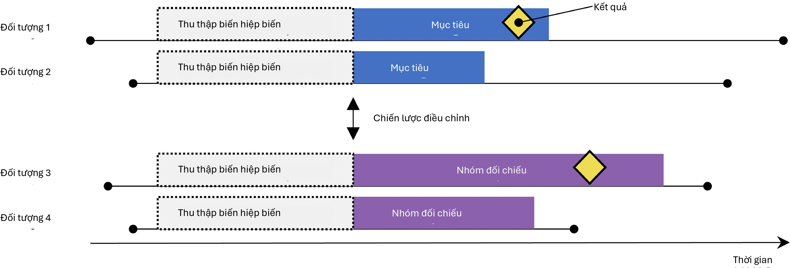
Hình 12.1: Thiết kế nhóm thuần tập người dùng mới. Các đối tượng được quan sát bắt đầu điều trị mục tiêu được so sánh với những đối tượng bắt đầu điều trị đối chứng. Để điều chỉnh sự khác biệt giữa hai nhóm điều trị, có thể sử dụng một số chiến lược điều chỉnh, chẳng hạn như phân tầng, ghép cặp hoặc trọng số theo điểm xu hướng, hoặc bằng cách thêm các đặc điểm nền vào mô hình kết cục. Các đặc điểm được bao gồm trong mô hình điểm xu hướng hoặc mô hình kết cục được ghi lại trước khi bắt đầu điều trị.
Phương pháp nhóm thuần tập cố gắng mô phỏng một thử nghiệm lâm sàng ngẫu nhiên. (Hernan và Robins, 2016) Các đối tượng được quan sát bắt đầu một phương pháp điều trị (mục tiêu) được so sánh với các đối tượng bắt đầu một phương pháp điều trị khác (đối chứng) và được theo dõi trong một khoảng thời gian cụ thể sau khi bắt đầu điều trị, ví dụ như khoảng thời gian họ duy trì việc điều trị. Chúng ta có thể chỉ định các câu hỏi mà chúng ta muốn trả lời trong một nghiên cứu nhóm thuần tập bằng cách đưa ra năm lựa chọn được nêu bật trong Bảng 12.1.
Bảng 12.1: Các lựa chọn thiết kế chính trong thiết kế nhóm thuần tập so sánh.
Lựa chọn Mô tả
Nhóm thuần tập mục tiêu Một nhóm thuần tập đại diện cho phương pháp điều trị mục tiêu Nhóm thuần tập đối chứng Một nhóm thuần tập đại diện cho phương pháp điều trị đối chứng Nhóm thuần tập kết cục Một nhóm thuần tập đại diện cho kết cục được quan tâm
Thời gian có nguy cơ Tại thời điểm nào (thường liên quan đến ngày bắt đầu và kết thúc của nhóm thuần tập mục tiêu và đối chứng) chúng ta xem xét nguy cơ xảy ra kết cục?
Mô hình Mô hình được sử dụng để ước tính hiệu quả trong khi điều chỉnh sự khác biệt giữa mục tiêu và đối chứng
Việc lựa chọn mô hình chỉ định, trong số những thứ khác, loại mô hình kết cục. Ví dụ, chúng ta có thể sử dụng hồi quy logistic, đánh giá xem kết cục có xảy ra hay không và tạo ra một tỷ số chênh (odds ratio). Hồi quy logistic giả định thời gian có nguy cơ có cùng độ dài cho cả mục tiêu và đối chứng, hoặc là không liên quan. Ngoài ra, chúng ta có thể
chọn hồi quy Poisson để ước tính tỷ suất mới mắc, giả định tỷ suất mới mắc không đổi. Thông thường, hồi quy Cox được sử dụng để xem xét thời gian đến kết cục đầu tiên nhằm ước tính tỷ số nguy cơ (hazard ratio), giả định các nguy cơ tỷ lệ giữa mục tiêu và đối chứng.

Một mối quan tâm chính là bệnh nhân nhận phương pháp điều trị mục tiêu có thể khác biệt một cách có hệ thống với những bệnh nhân nhận phương pháp điều trị đối chứng. Ví dụ, giả sử nhóm thuần tập mục tiêu trung bình 60 tuổi, trong khi nhóm thuần tập đối chứng trung bình 40 tuổi. Việc so sánh mục tiêu với đối chứng đối với bất kỳ kết cục sức khỏe liên quan đến tuổi nào (ví dụ: đột quỵ) sau đó có thể cho thấy sự khác biệt đáng kể giữa các nhóm. Một nhà nghiên cứu thiếu thông tin có thể đi đến kết luận rằng có một mối liên hệ nhân quả giữa phương pháp điều trị mục tiêu và đột quỵ so với phương pháp đối chứng. Một cách đơn giản hơn hoặc phổ biến hơn, nhà nghiên cứu có thể kết luận rằng tồn tại những bệnh nhân mục tiêu bị đột quỵ mà lẽ ra họ sẽ không bị nếu họ nhận phương pháp đối chứng. Kết luận này có thể hoàn toàn không chính xác! Có lẽ những bệnh nhân mục tiêu đó bị đột quỵ một cách không tương xứng chỉ vì họ già hơn; có lẽ những bệnh nhân mục tiêu bị đột quỵ có thể đã bị ngay cả khi họ nhận phương pháp đối chứng. Trong bối cảnh này, tuổi tác là một “yếu tố gây nhiễu”. Một cơ chế để đối phó với các yếu tố gây nhiễu trong các nghiên cứu quan sát là thông qua điểm xu hướng.
Điểm xu hướng
Trong một thử nghiệm ngẫu nhiên, việc tung đồng xu (ảo) sẽ chỉ định bệnh nhân vào các nhóm tương ứng của họ. Do đó, theo thiết kế, xác suất một bệnh nhân nhận phương pháp điều trị mục tiêu so với phương pháp đối chứng không liên quan theo bất kỳ cách nào đến các đặc điểm của bệnh nhân như tuổi tác. Đồng xu không biết gì về bệnh nhân, và hơn nữa, chúng ta biết chắc chắn xác suất chính xác mà một bệnh nhân nhận được phương pháp tiếp xúc mục tiêu. Kết quả là, và với sự tự tin ngày càng tăng khi số lượng bệnh nhân trong thử nghiệm tăng lên, hai nhóm bệnh nhân về cơ bản không thể khác biệt một cách có hệ thống đối với bất kỳ đặc điểm nào của bệnh nhân. Sự cân bằng được đảm bảo này đúng với các đặc điểm mà thử nghiệm đã đo lường (chẳng hạn như tuổi tác) cũng như các đặc điểm mà thử nghiệm không đo lường được, chẳng hạn như các yếu tố di truyền của bệnh nhân.
Đối với một bệnh nhân nhất định, điểm xu hướng (PS) là xác suất bệnh nhân đó nhận phương pháp điều trị mục tiêu so với đối chứng. (Rosenbaum và Rubin, 1983) Trong một thử nghiệm ngẫu nhiên hai nhánh cân bằng, điểm xu hướng là 0,5 cho mọi bệnh nhân. Trong một nghiên cứu quan sát được điều chỉnh bằng điểm xu hướng, chúng ta ước tính xác suất một bệnh nhân nhận
phương pháp điều trị mục tiêu dựa trên những gì chúng ta có thể quan sát được trong dữ liệu tại và trước thời điểm bắt đầu điều trị (bất kể phương pháp điều trị họ thực sự nhận được). Đây là một ứng dụng mô hình dự báo đơn giản; chúng ta khớp một mô hình (ví dụ: hồi quy logistic) dự đoán liệu một đối tượng có nhận phương pháp điều trị mục tiêu hay không và sử dụng mô hình này để tạo xác suất dự đoán (PS) cho mỗi đối tượng. Không giống như trong một thử nghiệm ngẫu nhiên tiêu chuẩn, các bệnh nhân khác nhau sẽ có xác suất nhận phương pháp điều trị mục tiêu khác nhau. PS có thể được sử dụng theo một số cách bao gồm ghép cặp các đối tượng mục tiêu với các đối tượng đối chứng có PS tương tự, phân tầng quần thể nghiên cứu dựa trên PS, hoặc sử dụng trọng số cho các đối tượng bằng cách sử dụng Trọng số xác suất nghịch đảo của điều trị (IPTW) bắt nguồn từ PS. Khi ghép cặp, chúng ta có thể chọn chỉ một đối tượng đối chứng cho mỗi đối tượng mục tiêu, hoặc chúng ta có thể cho phép nhiều hơn một đối tượng đối chứng cho mỗi đối tượng mục tiêu, một kỹ thuật được gọi là ghép cặp tỷ lệ biến đổi. (Rassen và cộng sự, 2012)
Ví dụ, giả sử chúng ta sử dụng ghép cặp PS một-một, và Jan có xác suất a priori là 0,4 nhận phương pháp điều trị mục tiêu và trên thực tế nhận phương pháp điều trị mục tiêu. Nếu chúng ta có thể tìm thấy một bệnh nhân (tên là Jun) cũng có xác suất a priori là 0,4 nhận phương pháp điều trị mục tiêu nhưng trên thực tế nhận phương pháp đối chứng, việc so sánh kết cục của Jan và Jun giống như một thử nghiệm ngẫu nhiên nhỏ, ít nhất là đối với các yếu tố gây nhiễu đã đo lường. Việc so sánh này sẽ mang lại một ước tính về sự tương phản nhân quả Jan-Jun tốt như những gì mà sự ngẫu nhiên hóa đã tạo ra. Việc ước tính sau đó tiến hành như sau: đối với mọi bệnh nhân nhận phương pháp mục tiêu, hãy tìm một hoặc nhiều bệnh nhân được ghép cặp đã nhận phương pháp đối chứng nhưng có cùng xác suất tiên nghiệm nhận phương pháp mục tiêu. So sánh kết cục cho bệnh nhân mục tiêu với các kết cục cho các bệnh nhân đối chứng trong mỗi nhóm được ghép cặp này.
Điểm xu hướng kiểm soát các yếu tố gây nhiễu đã đo lường. Trên thực tế, nếu việc chỉ định điều trị là “có thể bỏ qua một cách mạnh mẽ” (strongly ignorable) dựa trên các đặc điểm đã đo lường, điểm xu hướng sẽ mang lại một ước tính không thiên lệch về hiệu quả nhân quả. “Có thể bỏ qua một cách mạnh mẽ” về cơ bản có nghĩa là không có yếu tố gây nhiễu chưa đo lường nào, và các yếu tố gây nhiễu đã đo lường được điều chỉnh một cách thích hợp. Thật không may, đây không phải là một giả định có thể kiểm chứng được. Xem Chương 18 để thảo luận thêm về vấn đề này.
Lựa chọn biến
Trước đây, PS được tính toán dựa trên các đặc điểm được chọn thủ công, và mặc dù các công cụ OHDSI có thể hỗ trợ những phương pháp như vậy, chúng tôi ưu tiên sử dụng nhiều đặc điểm chung (tức là các đặc điểm không được chọn dựa trên các phơi nhiễm và kết cục cụ thể trong nghiên cứu). (Tian et al., 2018) Những đặc điểm này bao gồm nhân khẩu học, cũng như tất cả các chẩn đoán, phơi nhiễm thuốc, đo lường và thủ thuật y tế được quan sát trước và vào ngày bắt đầu điều trị. Một mô hình thường bao gồm từ 10.000 đến 100.000 đặc điểm duy nhất, được chúng tôi khớp bằng hồi quy chuẩn hóa quy mô lớn (Suchard et al., 2013) được triển khai trong gói Cyclops. Về cơ bản, chúng tôi để dữ liệu quyết định những đặc điểm nào có khả năng dự đoán việc phân bổ điều trị và nên được đưa vào mô hình.
We typically include the day of treatment initiation in the covariate capture window because many relevant data points such as the diagnosis leading to the treatment are recorded on that date. On this day the target and comparator treatment themselves are also recorded, but these should not be included in the propensity model, because they are the very thing we are trying to predict. We must therefore explicitly exclude the target and comparator treatment from the set of covariates
Một số người cho rằng cách tiếp cận dựa trên dữ liệu để lựa chọn đồng biến mà không phụ thuộc vào chuyên môn lâm sàng để xác định cấu trúc nhân quả "đúng" sẽ có nguy cơ vô tình đưa vào các biến gọi là biến công cụ và biến nhiễu (colliders), từ đó làm tăng phương sai và có khả năng gây sai lệch. (Hernan et al., 2002) Tuy nhiên, những lo ngại này khó có tác động lớn trong các tình huống thực tế. (Schneeweiss, 2018) Hơn nữa, trong y học, cấu trúc nhân quả thực sự hiếm khi được biết rõ, và khi các nhà nghiên cứu khác nhau được yêu cầu xác định các đồng biến 'đúng' để đưa vào cho một câu hỏi nghiên cứu cụ thể, mỗi nhà nghiên cứu luôn đưa ra một danh sách khác nhau, do đó làm cho quá trình này không thể tái lập. Quan trọng nhất, các chẩn đoán của chúng tôi như kiểm tra mô hình xu hướng, đánh giá sự cân bằng trên tất cả các đồng biến và đưa vào các kiểm soát âm tính sẽ xác định hầu hết các vấn đề liên quan đến biến nhiễu và biến công cụ.
Caliper (Khoảng dung sai)
Vì điểm xu hướng nằm trên một thang liên tục từ 0 đến 1, việc khớp chính xác hiếm khi khả thi. Thay vào đó, quá trình khớp tìm ra những bệnh nhân khớp với điểm xu hướng của (các) bệnh nhân mục tiêu trong một giới hạn dung sai được gọi là “caliper”. Theo Austin (2011), chúng tôi sử dụng caliper mặc định là 0,2 độ lệch chuẩn trên thang logit.
Độ chồng lấp: Điểm ưu tiên (Preference Scores)
Phương pháp điểm xu hướng đòi hỏi phải có những bệnh nhân phù hợp để khớp! Do đó, một chẩn đoán quan trọng cho thấy sự phân bố của điểm xu hướng trong hai nhóm. Để tạo điều kiện thuận lợi cho việc diễn giải, các công cụ OHDSI vẽ biểu đồ một phép biến đổi của điểm xu hướng được gọi là “điểm ưu tiên”. (Walker et al., 2013) Điểm ưu tiên điều chỉnh cho “thị phần” của hai phương pháp điều trị. Ví dụ, nếu 10% bệnh nhân nhận điều trị mục tiêu (và 90% nhận điều trị so sánh), thì những bệnh nhân có điểm ưu tiên là 0,5 có 10% xác suất nhận điều trị mục tiêu. Về mặt toán học, điểm ưu tiên là
ln ( 𝜞 ) = ln ( 𝑆 ) − ln ( 𝑃 )
1 − 𝜞 1 − 𝑆 1 − 𝑃
Trong đó 𝜞 là điểm ưu tiên, 𝑆 là điểm xu hướng, và 𝑃 là tỷ lệ bệnh nhân nhận điều trị mục tiêu.
Walker et al. (2013) thảo luận về khái niệm “cân bằng thực nghiệm” (empirical equipoise). Họ chấp nhận các cặp phơi nhiễm là xuất phát từ sự cân bằng thực nghiệm nếu ít nhất một nửa số ca phơi nhiễm là ở những bệnh nhân có điểm ưu tiên từ 0,3 đến 0,7.
Bảng 12.2: Các lựa chọn thiết kế chính trong thiết kế nhóm thuần tập tự kiểm soát.
Lựa chọn Mô tả
Nhóm thuần tập mục tiêu Một nhóm thuần tập đại diện cho phương pháp điều trị
Nhóm thuần tập kết cục Một nhóm thuần tập đại diện cho kết cục quan tâm
Thời gian có nguy cơ Tại thời điểm nào (thường so với ngày bắt đầu và ngày kết thúc của nhóm thuần tập mục tiêu) chúng ta xem xét nguy cơ xảy ra kết cục?
Thời gian kiểm soát Khoảng thời gian được sử dụng làm thời gian kiểm soát
Sự cân bằng
Thực hành tốt luôn kiểm tra xem việc điều chỉnh PS có thành công trong việc tạo ra các nhóm bệnh nhân cân bằng hay không. Hình 12.19 hiển thị kết quả đầu ra OHDSI chuẩn để kiểm tra sự cân bằng. Đối với mỗi đặc điểm bệnh nhân, biểu đồ này vẽ ra sự khác biệt chuẩn hóa giữa các giá trị trung bình của hai nhóm phơi nhiễm trước và sau khi điều chỉnh PS. Một số hướng dẫn khuyến nghị ngưỡng trên của sự khác biệt chuẩn hóa sau điều chỉnh là 0,1. (Rubin, 2001)
Thiết kế nhóm thuần tập tự kiểm soát
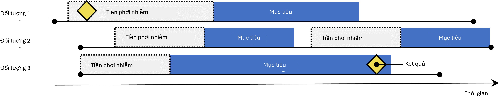
Hình 12.2: Thiết kế nhóm thuần tập tự kiểm soát. Tỷ lệ kết cục trong thời gian phơi nhiễm với mục tiêu được so sánh với tỷ lệ kết cục trong thời gian trước phơi nhiễm.
Thiết kế nhóm thuần tập tự kiểm soát (SCC) (Ryan et al., 2013a) so sánh tỷ lệ kết cục trong thời gian phơi nhiễm với tỷ lệ kết cục trong thời gian ngay trước khi phơi nhiễm. Bốn lựa chọn được hiển thị trong Bảng 12.2 xác định một câu hỏi nhóm thuần tập tự kiểm soát.
Vì cùng một đối tượng tạo nên nhóm phơi nhiễm cũng được sử dụng làm nhóm kiểm soát, nên không cần thực hiện điều chỉnh cho các khác biệt giữa các cá nhân. Tuy nhiên, phương pháp này dễ bị ảnh hưởng bởi những khác biệt khác, chẳng hạn như sự khác biệt về nguy cơ cơ bản của kết cục giữa các khoảng thời gian khác nhau.
Thiết kế bệnh chứng (Case-Control)
Các nghiên cứu bệnh chứng (Vandenbroucke và Pearce, 2012) xem xét câu hỏi “liệu những người có kết cục bệnh cụ thể có bị phơi nhiễm thường xuyên hơn với một tác nhân cụ thể so với những người không mắc bệnh không?”. Do đó, ý tưởng trung tâm là so sánh các “ca bệnh”, tức là các đối tượng
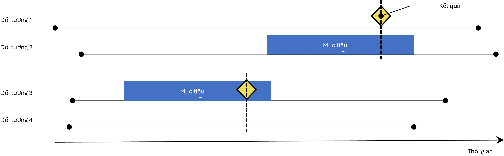
Hình 12.3: Thiết kế bệnh chứng. Các đối tượng có kết cục (‘ca bệnh’) được so sánh với các đối tượng không có kết cục (‘nhóm chứng’) về tình trạng phơi nhiễm của họ. Thông thường, các ca bệnh và nhóm chứng được khớp dựa trên các đặc điểm khác nhau như tuổi và giới tính.
Bảng 12.3: Các lựa chọn thiết kế chính trong thiết kế bệnh chứng.
Lựa chọn Mô tả
Nhóm thuần tập kết cục Một nhóm thuần tập đại diện cho các ca bệnh (kết cục quan tâm) Nhóm thuần tập kiểm soát Một nhóm thuần tập đại diện cho nhóm chứng. Thông thường nhóm thuần tập kiểm soát được tự động trích xuất từ nhóm thuần tập kết cục
sử dụng một số logic lựa chọn
Nhóm thuần tập mục tiêu Một nhóm thuần tập đại diện cho phương pháp điều trị
Nhóm thuần tập lồng ghép Tùy chọn, một nhóm thuần tập xác định phân nhóm mà từ đó các ca bệnh và nhóm chứng được rút ra
Thời gian có nguy cơ Tại thời điểm nào (thường so với ngày chỉ mục) chúng ta xem xét tình trạng phơi nhiễm?
trải qua kết cục quan tâm, với các “nhóm chứng”, tức là các đối tượng không trải qua kết cục quan tâm. Các lựa chọn trong Bảng 12.3 xác định một câu hỏi bệnh chứng.
Thông thường, người ta chọn nhóm chứng để khớp với các ca bệnh dựa trên các đặc điểm như tuổi và giới tính để làm cho chúng có thể so sánh được hơn. Một thực hành phổ biến khác là lồng ghép phân tích trong một phân nhóm người cụ thể, ví dụ những người đều đã được chẩn đoán mắc một trong các chỉ định của phơi nhiễm quan tâm.
Thiết kế Case-Crossover (Chéo bệnh-phơi nhiễm)
Thiết kế case-crossover (Maclure, 1991) đánh giá liệu tỷ lệ phơi nhiễm có khác biệt tại thời điểm xảy ra kết cục so với một số ngày xác định trước đó hay không. Nó đang cố gắng xác định liệu có điều gì đặc biệt về ngày xảy ra kết cục hay không. Bảng 12.4 hiển thị các lựa chọn xác định một câu hỏi case-crossover.
Các ca bệnh đóng vai trò là nhóm chứng của chính họ. Là các thiết kế tự kiểm soát, chúng sẽ vững chắc trước sự gây nhiễu do khác biệt giữa các cá nhân. Một mối lo ngại là, vì ngày kết-
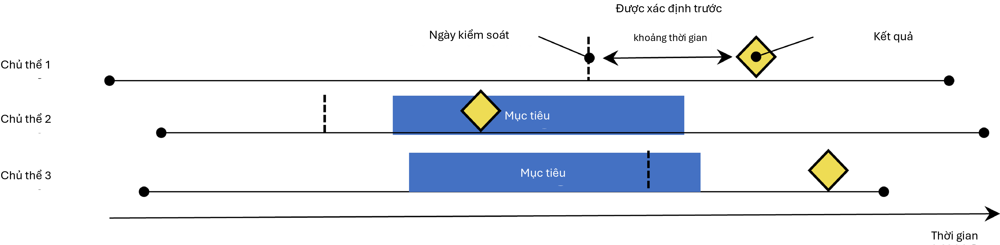
Hình 12.4: Thiết kế case-crossover. Thời gian xung quanh kết cục được so sánh với một ngày kiểm soát được đặt tại một khoảng thời gian xác định trước ngày kết cục.
Bảng 12.4: Các lựa chọn thiết kế chính trong thiết kế case-crossover.
Lựa chọn Mô tả
Nhóm thuần tập kết cục Một nhóm thuần tập đại diện cho các ca bệnh (kết cục quan tâm) Nhóm thuần tập mục tiêu Một nhóm thuần tập đại diện cho phương pháp điều trị
Thời gian có nguy cơ Tại thời điểm nào (thường so với ngày chỉ mục) chúng ta xem xét tình trạng phơi nhiễm?
Thời gian kiểm soát Khoảng thời gian được sử dụng làm thời gian kiểm soát
cục luôn diễn ra sau ngày kiểm soát, phương pháp này sẽ bị sai lệch dương tính nếu tần suất phơi nhiễm tổng thể tăng theo thời gian (hoặc sai lệch âm tính nếu có sự sụt giảm). Để giải quyết vấn đề này, thiết kế case-time-control (Suissa, 1995) đã được phát triển, bổ sung thêm nhóm chứng, ví dụ được khớp về tuổi và giới tính, vào thiết kế case-crossover để điều chỉnh cho các xu hướng phơi nhiễm.
Thiết kế chuỗi ca bệnh tự kiểm soát (Self-Controlled Case Series)
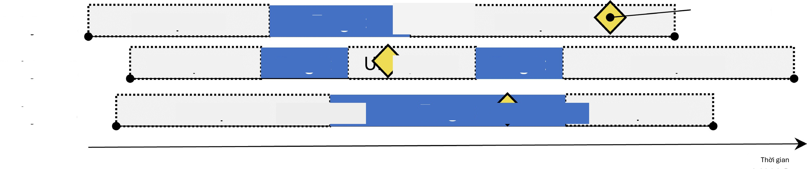
Hình 12.5: Thiết kế chuỗi ca bệnh tự kiểm soát. Tỷ lệ kết cục trong thời gian phơi nhiễm được so sánh với tỷ lệ kết cục khi không phơi nhiễm.
Thiết kế Chuỗi ca bệnh tự kiểm soát (SCCS) (Farrington, 1995; Whitaker et al., 2006) so sánh tỷ lệ kết cục trong thời gian phơi nhiễm với tỷ lệ kết cục trong tất cả thời gian không phơi nhiễm, bao gồm trước, giữa và sau khi phơi nhiễm. Đây là một hồi quy Poisson được điều kiện hóa trên từng cá nhân. Do đó, nó tìm cách trả lời câu hỏi: “Với việc một bệnh nhân có kết cục, liệu kết cục có khả năng xảy ra cao hơn trong thời gian phơi nhiễm so với
Bảng 12.5: Các lựa chọn thiết kế chính trong thiết kế chuỗi ca bệnh tự kiểm soát.
Lựa chọn Mô tả
Nhóm thuần tập mục tiêu Một nhóm thuần tập đại diện cho phương pháp điều trị
Nhóm thuần tập kết cục Một nhóm thuần tập đại diện cho kết cục quan tâm
Thời gian có nguy cơ Tại thời điểm nào (thường so với ngày bắt đầu và ngày kết thúc của nhóm thuần tập mục tiêu) chúng ta xem xét nguy cơ xảy ra kết cục?
Mô hình Mô hình để ước tính hiệu quả, bao gồm bất kỳ điều chỉnh nào cho các yếu tố gây nhiễu thay đổi theo thời gian
thời gian không phơi nhiễm?“. Các lựa chọn trong Bảng 12.5 xác định một câu hỏi SCCS.
Giống như các thiết kế tự kiểm soát khác, SCCS vững chắc trước sự gây nhiễu do khác biệt giữa các cá nhân, nhưng dễ bị tổn thương trước sự gây nhiễu do các tác động thay đổi theo thời gian. Một số điều chỉnh có thể thực hiện để cố gắng giải quyết các vấn đề này, ví dụ bằng cách đưa vào tuổi và mùa. Một biến thể đặc biệt của SCCS bao gồm không chỉ phơi nhiễm quan tâm, mà tất cả các phơi nhiễm khác với thuốc được ghi lại trong cơ sở dữ liệu (Simpson et al., 2013), có khả năng bổ sung hàng ngàn biến bổ sung vào mô hình. Chuẩn hóa L1 sử dụng kiểm chứng chéo để chọn siêu tham số chuẩn hóa được áp dụng cho các hệ số của tất cả các phơi nhiễm ngoại trừ phơi nhiễm quan tâm.
Một giả định quan trọng làm nền tảng cho SCCS là thời điểm kết thúc giai đoạn quan sát độc lập với ngày xảy ra kết cục. Đối với một số kết cục, đặc biệt là những kết cục có thể gây tử vong như đột quỵ, giả định này có thể bị vi phạm. Một phần mở rộng cho SCCS đã được phát triển để hiệu chỉnh cho bất kỳ sự phụ thuộc nào như vậy. (Farrington et al., 2011)
Thiết kế một nghiên cứu về tăng huyết áp
Định nghĩa vấn đề
Thuốc ức chế men chuyển (ACEi) được sử dụng rộng rãi ở bệnh nhân tăng huyết áp hoặc bệnh tim thiếu máu cục bộ, đặc biệt là những người có các bệnh đồng mắc khác như suy tim sung huyết, đái tháo đường hoặc bệnh thận mãn tính. (Zaman et al., 2002) Phù mạch, một biến cố bất lợi nghiêm trọng và đôi khi đe dọa tính mạng thường biểu hiện dưới dạng sưng môi, lưỡi, miệng, thanh quản, hầu hoặc vùng quanh hốc mắt, đã được liên kết với việc sử dụng các loại thuốc này. (Sabroe và Black, 1997) Tuy nhiên, thông tin hạn chế về các nguy cơ tuyệt đối và tương đối đối với phù mạch liên quan đến việc sử dụng các loại thuốc này. Bằng chứng hiện có chủ yếu dựa trên các cuộc điều tra về các nhóm thuần tập cụ thể (ví dụ: cựu chiến binh nam giới hoặc những người thụ hưởng Medicaid) mà các phát hiện của họ có thể không tổng quát hóa được cho các quần thể khác, hoặc dựa trên các cuộc điều tra với ít biến cố, cung cấp các ước tính nguy cơ không ổn định. (Powers et al., 2012) Một số nghiên cứu quan sát so sánh ACEi với thuốc chẹn beta về nguy cơ phù mạch, (Magid et al., 2010; Toh et al., 2012) nhưng thuốc chẹn beta không còn được khuyến nghị là phương pháp điều trị đầu tay cho tăng huyết áp. (Whelton et al., 2018) Một phương pháp điều trị thay thế khả thi có thể là thiazide hoặc thuốc lợi tiểu giống thiazide
(THZ), có thể hiệu quả như nhau trong việc kiểm soát tăng huyết áp và các nguy cơ liên quan như nhồi máu cơ tim cấp (AMI), nhưng không làm tăng nguy cơ phù mạch.
Phần sau đây sẽ chứng minh cách áp dụng khung ước tính cấp độ quần thể của chúng tôi vào dữ liệu chăm sóc sức khỏe quan sát để giải quyết các câu hỏi ước tính so sánh sau:
Nguy cơ phù mạch ở những người mới sử dụng thuốc ức chế men chuyển so với những người mới sử dụng thuốc thiazide và thuốc lợi tiểu giống thiazide là gì?
Nguy cơ nhồi máu cơ tim cấp ở những người mới sử dụng thuốc ức chế men chuyển so với những người mới sử dụng thuốc thiazide và thuốc lợi tiểu giống thiazide là gì?
Vì đây là các câu hỏi ước tính hiệu quả so sánh, chúng tôi sẽ áp dụng phương pháp nhóm thuần tập như được mô tả trong Phần 12.1.
Mục tiêu và Đối tượng so sánh
Chúng tôi coi bệnh nhân là người mới sử dụng nếu lần điều trị tăng huyết áp đầu tiên được quan sát của họ là đơn trị liệu với bất kỳ hoạt chất nào trong nhóm ACEi hoặc THZ. Chúng tôi định nghĩa đơn trị liệu là không bắt đầu sử dụng bất kỳ loại thuốc chống tăng huyết áp nào khác trong bảy ngày sau khi bắt đầu điều trị. Chúng tôi yêu cầu bệnh nhân phải có ít nhất một năm quan sát liên tục trước đó trong cơ sở dữ liệu trước khi phơi nhiễm lần đầu và có chẩn đoán tăng huyết áp được ghi lại tại thời điểm hoặc trong năm trước khi bắt đầu điều trị.
Kết cục
Chúng tôi định nghĩa phù mạch là bất kỳ sự xuất hiện nào của khái niệm tình trạng phù mạch trong chuyến thăm nội trú hoặc phòng cấp cứu (ER), và yêu cầu không có chẩn đoán phù mạch nào được ghi lại trong bảy ngày trước đó. Chúng tôi định nghĩa AMI là bất kỳ sự xuất hiện nào của khái niệm tình trạng AMI trong chuyến thăm nội trú hoặc ER, và yêu cầu không có hồ sơ chẩn đoán AMI nào trong 180 ngày trước đó.
Thời gian có nguy cơ
Chúng tôi định nghĩa thời gian có nguy cơ bắt đầu vào ngày sau khi bắt đầu điều trị, và dừng lại khi kết thúc phơi nhiễm, cho phép khoảng cách 30 ngày giữa các lần phơi nhiễm thuốc tiếp theo.
Mô hình
Chúng tôi khớp mô hình PS bằng cách sử dụng tập hợp các đồng biến mặc định, bao gồm nhân khẩu học, tình trạng bệnh, thuốc, thủ thuật, đo lường, quan sát và một số điểm số bệnh đồng mắc. Chúng tôi loại trừ ACEi và THZ khỏi các đồng biến. Chúng tôi thực hiện khớp tỷ lệ biến đổi và điều kiện hóa hồi quy Cox trên các tập hợp đã khớp.
Tóm tắt nghiên cứu
Bảng 12.6: Các lựa chọn thiết kế chính cho nghiên cứu nhóm thuần tập so sánh của chúng tôi.
Lựa chọn Giá trị
Nhóm thuần tập mục tiêu Người mới sử dụng thuốc ức chế men chuyển làm đơn trị liệu đầu tay cho tăng huyết áp.
Nhóm thuần tập so sánh Người mới sử dụng thuốc thiazide hoặc thuốc lợi tiểu giống thiazide làm đơn trị liệu đầu tay cho tăng huyết áp.
Nhóm thuần tập kết cục Phù mạch hoặc nhồi máu cơ tim cấp.
Thời gian có nguy cơ Bắt đầu ngày sau khi bắt đầu điều trị, dừng lại khi kết thúc phơi nhiễm.
Mô hình Mô hình nguy cơ tỷ lệ Cox sử dụng khớp tỷ lệ biến đổi.
Các câu hỏi kiểm soát
Để đánh giá liệu thiết kế nghiên cứu của chúng tôi có tạo ra các ước tính phù hợp với sự thật hay không, chúng tôi bổ sung thêm một tập hợp các câu hỏi kiểm soát nơi biết rõ kích thước hiệu quả thực sự. Các câu hỏi kiểm soát có thể được chia thành các kiểm soát âm tính, có tỷ số nguy cơ bằng 1, và kiểm soát dương tính, có tỷ số nguy cơ đã biết lớn hơn 1. Vì nhiều lý do, chúng tôi sử dụng các kiểm soát âm tính thực tế và tổng hợp các kiểm soát dương tính dựa trên các kiểm soát âm tính này. Cách xác định và sử dụng các câu hỏi kiểm soát được thảo luận chi tiết trong Chương 18.
Triển khai nghiên cứu bằng ATLAS
Tại đây, chúng tôi chứng minh cách nghiên cứu này có thể được triển khai bằng hàm Estimation (Ước tính) trong ATLAS. Nhấp vào trong thanh bên trái của ATLAS và tạo một nghiên cứu ước tính mới. Hãy chắc chắn đặt cho nghiên cứu một cái tên dễ nhận biết. Thiết kế nghiên cứu có thể được lưu bất cứ lúc nào bằng cách nhấp vào nút .
Trong hàm thiết kế Ước tính, có ba phần: So sánh, Cài đặt phân tích và Cài đặt đánh giá. Chúng ta có thể chỉ định nhiều so sánh và nhiều cài đặt phân tích, và ATLAS sẽ thực hiện tất cả các kết hợp này dưới dạng các phân tích riêng biệt. Tại đây, chúng tôi thảo luận từng phần:
Cài đặt nhóm thuần tập so sánh
Một nghiên cứu có thể có một hoặc nhiều so sánh. Nhấp vào “Add Comparison” (Thêm so sánh), thao tác này sẽ mở ra một hộp thoại mới. Nhấp vào để chọn các nhóm thuần tập mục tiêu và so sánh. Bằng cách nhấp vào “Add Outcome” (Thêm kết cục), chúng ta có thể thêm hai nhóm thuần tập kết cục của mình. Chúng tôi giả định rằng các nhóm thuần tập đã được tạo trong ATLAS như được mô tả trong Chương 10. Phụ lục cung cấp các định nghĩa đầy đủ về các nhóm thuần tập mục tiêu (Phụ lục B.2), so sánh (Phụ lục B.5) và kết cục (Phụ lục B.4 và Phụ lục B.3). Khi hoàn tất, hộp thoại sẽ trông giống như Hình 12.6.
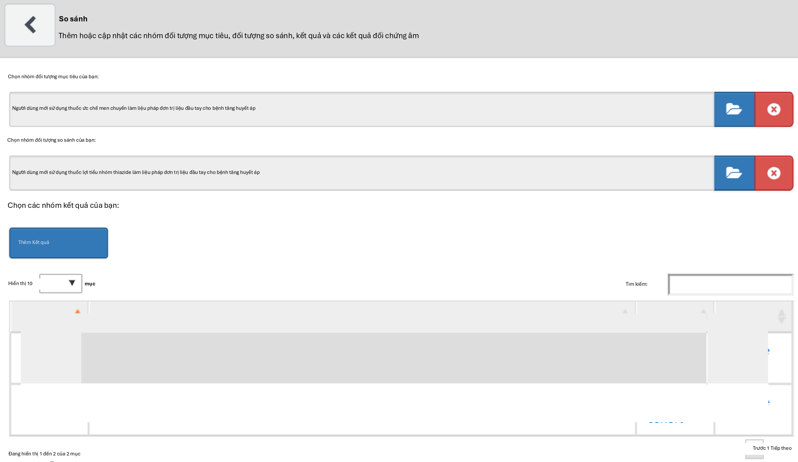
Hình 12.6: Hộp thoại so sánh
Lưu ý rằng chúng ta có thể chọn nhiều kết cục cho một cặp mục tiêu-so sánh. Mỗi kết cục sẽ được xử lý độc lập và sẽ dẫn đến một phân tích riêng biệt.
Các kết cục kiểm soát âm tính
Các kết cục kiểm soát âm tính là những kết cục được cho là không gây ra bởi mục tiêu hoặc đối tượng so sánh, và do đó tỷ số nguy cơ thực sự bằng 1. Lý tưởng nhất là chúng ta nên có các định nghĩa nhóm thuần tập phù hợp cho từng nhóm thuần tập kết cục. Tuy nhiên, thông thường, chúng ta chỉ có một tập hợp khái niệm, với một khái niệm cho mỗi kết cục kiểm soát âm tính, và một số logic chuẩn để biến chúng thành các nhóm thuần tập kết cục. Tại đây, chúng tôi giả định rằng tập hợp khái niệm đã được tạo như được mô tả trong Chương 18 và có thể được chọn đơn giản. Tập hợp khái niệm kiểm soát âm tính nên chứa một khái niệm cho mỗi kiểm soát âm tính và không bao gồm các hậu duệ. Hình 12.7 hiển thị tập hợp khái niệm kiểm soát âm tính được sử dụng cho nghiên cứu này.
Các khái niệm cần đưa vào
Khi chọn khái niệm để đưa vào, chúng ta có thể chỉ định những đồng biến nào chúng ta muốn tạo, ví dụ để sử dụng trong mô hình điểm xu hướng. Khi chỉ định các đồng biến ở đây, tất cả các đồng biến khác (ngoài những đồng biến bạn đã chỉ định) sẽ bị loại bỏ. Chúng tôi thường muốn đưa vào tất cả các đồng biến cơ bản, để hồi quy chuẩn hóa xây dựng một mô hình cân bằng tất cả các đồng biến. Lý do duy nhất chúng ta có thể muốn chỉ định các đồng biến cụ thể là để tái lập một nghiên cứu hiện có đã chọn thủ công các đồng biến. Những bao hàm này có thể được chỉ định trong phần so sánh này hoặc trong phần phân tích, vì đôi khi chúng liên quan đến một so sánh cụ thể (ví dụ: các yếu tố gây nhiễu đã biết trong một so sánh), hoặc đôi khi chúng liên quan đến một phân tích (ví dụ: khi đánh giá một chiến lược lựa chọn đồng biến cụ thể).
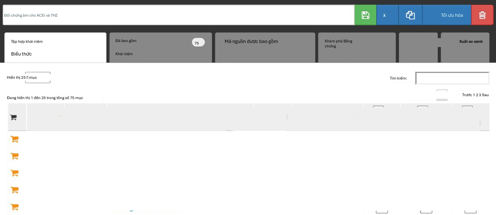
Hình 12.7: Tập hợp khái niệm Kiểm soát âm tính.
Các khái niệm cần loại trừ
Thay vì chỉ định những khái niệm nào cần đưa vào, chúng ta có thể chỉ định các khái niệm cần loại trừ. Khi chúng ta gửi một tập hợp khái niệm trong trường này, chúng ta sử dụng mọi đồng biến ngoại trừ những đồng biến mà chúng ta đã gửi. Khi sử dụng tập hợp các đồng biến mặc định, bao gồm tất cả các loại thuốc và thủ thuật xảy ra vào ngày bắt đầu điều trị, chúng ta phải loại trừ phương pháp điều trị mục tiêu và so sánh, cũng như bất kỳ khái niệm nào liên quan trực tiếp đến chúng. Ví dụ, nếu phơi nhiễm mục tiêu là thuốc tiêm, chúng ta không chỉ nên loại trừ thuốc mà còn cả thủ thuật tiêm khỏi mô hình điểm xu hướng. Trong ví dụ này, các đồng biến chúng ta muốn loại trừ là ACEi và THZ. Hình 12.8 cho thấy chúng ta chọn một tập hợp khái niệm bao gồm tất cả các khái niệm này, bao gồm cả các hậu duệ của chúng.
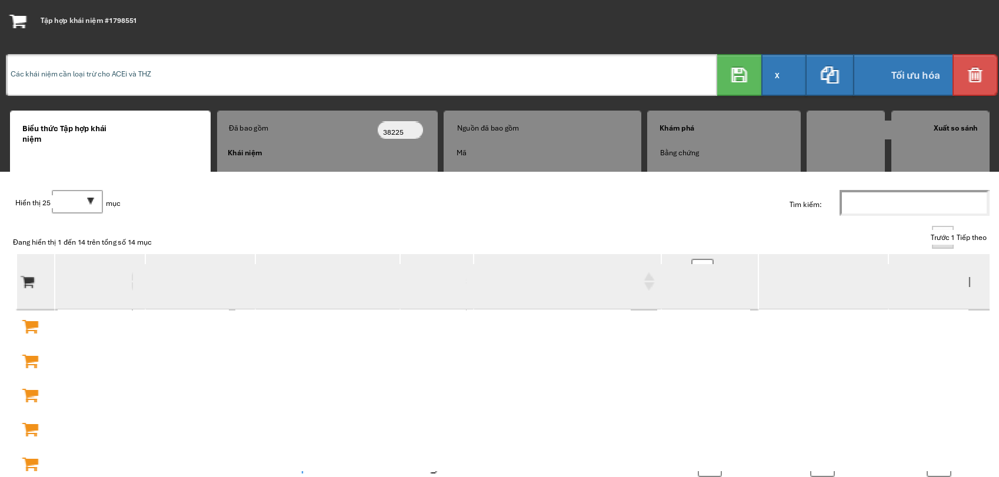
Hình 12.8: Tập hợp khái niệm xác định các khái niệm cần loại trừ.
Sau khi chọn các kiểm soát âm tính và các đồng biến cần loại trừ, nửa dưới của hộp thoại so
sánh sẽ trông giống như Hình 12.9.
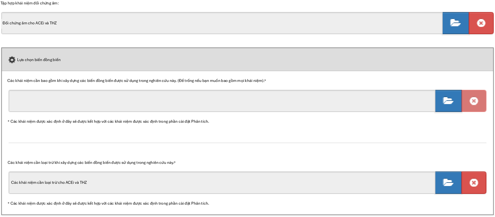
Hình 12.9: Cửa sổ so sánh hiển thị các tập hợp khái niệm cho các kiểm soát âm tính và các khái niệm cần loại trừ.
Cài đặt phân tích ước tính hiệu quả
Sau khi đóng hộp thoại so sánh, chúng ta có thể nhấp vào “Add Analysis Settings” (Thêm cài đặt phân tích). Trong hộp có nhãn “Analysis Name” (Tên phân tích), chúng ta có thể đặt cho phân tích một cái tên duy nhất dễ nhớ và dễ tìm trong tương lai. Ví dụ, chúng ta có thể đặt tên là “Propensity score matching” (Khớp điểm xu hướng).
Quần thể nghiên cứu
Có rất nhiều tùy chọn để chỉ định quần thể nghiên cứu, là tập hợp các đối tượng sẽ tham gia vào phân tích. Nhiều tùy chọn trong số này trùng lặp với các tùy chọn có sẵn khi thiết kế các nhóm thuần tập mục tiêu và so sánh trong công cụ định nghĩa nhóm thuần tập. Một lý do để sử dụng các tùy chọn trong Estimation (Ước tính) thay vì trong định nghĩa nhóm thuần tập là khả năng tái sử dụng; chúng ta có thể định nghĩa các nhóm thuần tập mục tiêu, so sánh và kết cục hoàn toàn độc lập và thêm các phụ thuộc giữa chúng tại một thời điểm sau đó. Ví dụ, nếu chúng ta muốn loại bỏ những người đã có kết cục trước khi bắt đầu điều trị, chúng ta có thể làm như vậy trong các định nghĩa của nhóm thuần tập mục tiêu và so sánh, nhưng sau đó chúng ta sẽ cần tạo các nhóm thuần tập riêng biệt cho mọi kết cục! Thay vào đó, chúng ta có thể chọn loại bỏ những người có kết cục trước đó trong cài đặt phân tích, và bây giờ chúng ta có thể tái sử dụng các nhóm thuần tập mục tiêu và so sánh cho hai kết cục quan tâm của mình (cũng như các kết cục kiểm soát âm tính của chúng ta).
Ngày bắt đầu và ngày kết thúc nghiên cứu có thể được sử dụng để giới hạn các phân tích trong một khoảng thời gian cụ thể. Ngày kết thúc nghiên cứu cũng cắt ngắn các cửa sổ nguy cơ, nghĩa là không có kết cục nào sau ngày kết thúc nghiên cứu được xem xét. Một lý do để chọn ngày bắt đầu nghiên cứu có thể là một trong những loại thuốc đang được nghiên cứu là thuốc mới và không tồn tại trong thời gian trước đó. Việc tự động điều chỉnh cho điều này có thể được thực hiện bằng cách trả lời “yes” (có) cho câu hỏi “Restrict the analysis to the period when both exposures are present in the data?” (Giới hạn phân tích trong khoảng thời gian khi cả hai phơi nhiễm đều có mặt trong dữ liệu?). Một lý do khác để điều chỉnh ngày
bắt đầu và kết thúc nghiên cứu có thể là thực hành y tế đã thay đổi theo thời gian (ví dụ: do cảnh báo về thuốc) và chúng ta chỉ quan tâm đến thời gian mà y học được thực hành theo một cách cụ thể.
Tùy chọn “Should only the first exposure per subject be included?” (Chỉ nên bao gồm phơi nhiễm đầu tiên cho mỗi đối tượng?) có thể được sử dụng để giới hạn ở phơi nhiễm đầu tiên cho mỗi bệnh nhân. Thông thường, điều này đã được thực hiện trong định nghĩa nhóm thuần tập, như trường hợp trong ví dụ này. Tương tự, tùy chọn “The minimum required continuous observation time prior to index date for a person to be included in the cohort” (Thời gian quan sát liên tục tối thiểu cần thiết trước ngày chỉ mục để một người được đưa vào nhóm thuần tập) thường đã được đặt trong định nghĩa nhóm thuần tập, và do đó có thể để ở mức 0 ở đây. Việc có thời gian quan sát (như được định nghĩa trong bảng OBSERVATION_PERIOD) trước ngày chỉ mục đảm bảo rằng có đủ thông tin về bệnh nhân để tính điểm xu hướng, và cũng thường được sử dụng để đảm bảo bệnh nhân thực sự là người mới sử dụng, và do đó chưa từng phơi nhiễm trước đó.
“Remove subjects that are in both the target and comparator cohort?” (Loại bỏ các đối tượng có trong cả nhóm thuần tập mục tiêu và so sánh?) xác định, cùng với tùy chọn “If a subject is in multiple cohorts, should time-at-risk be censored when the new time-at-risk starts to prevent overlap?” (Nếu một đối tượng có trong nhiều nhóm thuần tập, liệu thời gian có nguy cơ có nên bị kiểm duyệt khi thời gian có nguy cơ mới bắt đầu để ngăn chặn sự chồng lấp?) điều gì xảy ra khi một đối tượng có trong cả nhóm thuần tập mục tiêu và so sánh. Cài đặt đầu tiên có ba lựa chọn:
“Keep All” (Giữ tất cả) cho biết giữ các đối tượng trong cả hai nhóm thuần tập. Với tùy chọn này, có thể xảy ra tình trạng đếm trùng các đối tượng và kết cục.
“Keep First” (Giữ cái đầu tiên) cho biết giữ đối tượng trong nhóm thuần tập đầu tiên xuất hiện.
“Remove All” (Loại bỏ tất cả) cho biết loại bỏ đối tượng khỏi cả hai nhóm thuần tập.
Nếu các tùy chọn “keep all” hoặc “keep first” được chọn, chúng ta có thể muốn kiểm duyệt thời gian khi một người có trong cả hai nhóm thuần tập. Điều này được minh họa trong Hình 12.10. Theo mặc định, thời gian có nguy cơ được định nghĩa tương đối so với ngày bắt đầu và ngày kết thúc nhóm thuần tập. Trong ví dụ này, thời gian có nguy cơ bắt đầu một ngày sau khi nhập nhóm thuần tập và dừng lại khi kết thúc nhóm thuần tập. Nếu không kiểm duyệt, thời gian có nguy cơ cho hai nhóm thuần tập có thể chồng lấp. Điều này đặc biệt có vấn đề nếu chúng ta chọn giữ tất cả, vì bất kỳ kết cục nào xảy ra trong sự chồng lấp này (như được hiển thị) sẽ được tính hai lần. Nếu chúng ta chọn kiểm duyệt, thời gian có nguy cơ của nhóm thuần tập đầu tiên sẽ kết thúc khi thời gian có nguy cơ của nhóm thuần tập thứ hai bắt đầu.
Chúng ta có thể chọn loại bỏ những đối tượng có kết cục trước khi bắt đầu cửa sổ nguy cơ, vì thông thường sự xuất hiện kết cục lần thứ hai là sự tiếp nối của lần thứ nhất. Ví dụ, khi ai đó bị suy tim, lần xuất hiện thứ hai là có khả năng xảy ra, điều đó có nghĩa là suy tim có lẽ chưa bao giờ hoàn toàn giải quyết được trong khoảng thời gian đó. Mặt khác, một số kết cục là từng đợt, và bệnh nhân có thể có nhiều hơn một lần xuất hiện độc lập, như nhiễm trùng đường hô hấp trên. Nếu chúng ta chọn loại bỏ những người đã có kết cục trước đó, chúng ta có thể chọn xem chúng ta nên nhìn lại bao nhiêu ngày khi xác định các kết cục trước đó.
Các lựa chọn của chúng tôi cho nghiên cứu ví dụ được hiển thị trong Hình 12.11. Vì các định nghĩa nhóm thuần tập mục tiêu và so sánh của chúng tôi đã giới hạn ở phơi nhiễm đầu tiên và yêu cầu thời gian quan sát trước khi bắt đầu điều trị, chúng tôi không áp dụng các tiêu chí này ở đây.
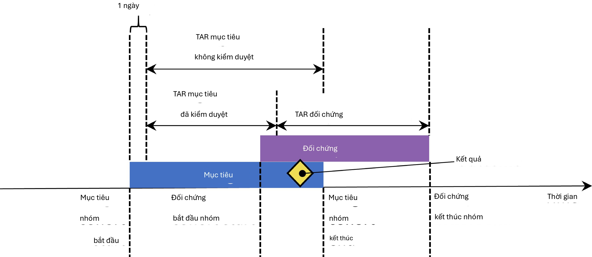
Hình 12.10: Thời gian có nguy cơ (TAR) cho các đối tượng có trong cả hai nhóm thuần tập, giả định thời gian có nguy cơ bắt đầu vào ngày sau khi bắt đầu điều trị và dừng lại khi kết thúc phơi nhiễm.
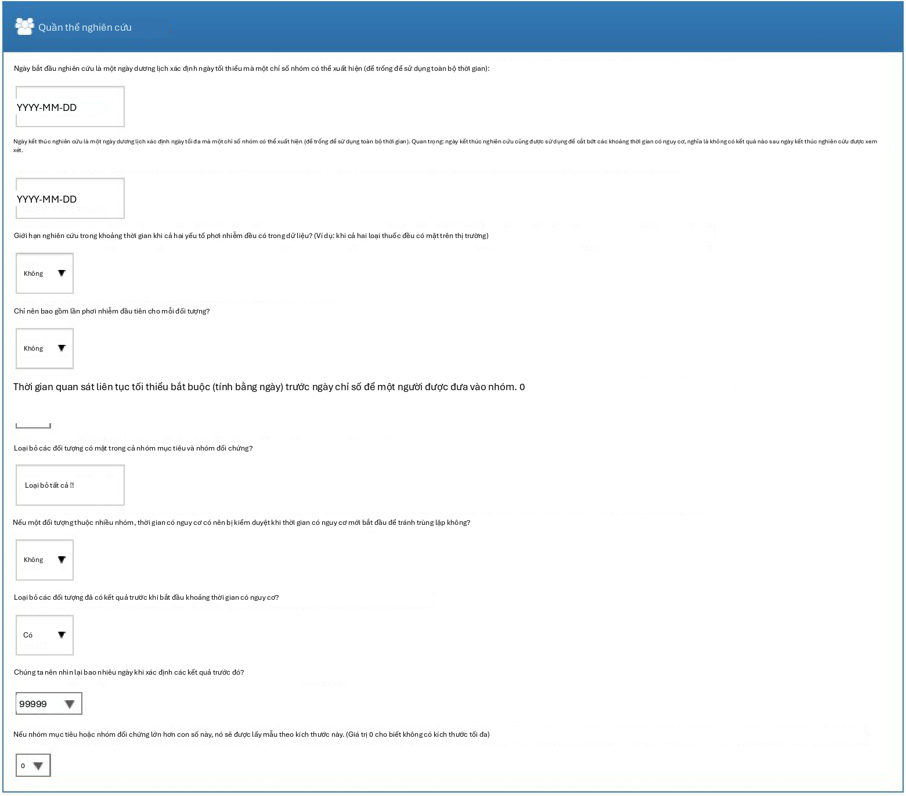
Hình 12.11: Cài đặt quần thể nghiên cứu.
Cài đặt đồng biến
Tại đây, chúng tôi chỉ định các đồng biến cần xây dựng. Các đồng biến này thường được sử dụng trong mô hình điểm xu hướng, nhưng cũng có thể được đưa vào mô hình kết cục (mô hình nguy cơ tỷ lệ Cox trong trường hợp này). Nếu chúng ta nhấp để xem chi tiết cài đặt đồng biến của mình, chúng ta có thể chọn tập hợp đồng biến nào cần xây dựng. Tuy nhiên, khuyến nghị là sử dụng tập hợp mặc định, xây dựng các đồng biến cho nhân khẩu học, tất cả các tình trạng bệnh, thuốc, thủ thuật, đo lường, v.v.
Chúng ta có thể sửa đổi tập hợp đồng biến bằng cách chỉ định các khái niệm cần đưa vào và/hoặc loại trừ. Các cài đặt này giống như các cài đặt được tìm thấy trong Phần 12.7.1 về cài đặt so sánh. Lý do tại sao chúng có thể được tìm thấy ở hai nơi là vì đôi khi các cài đặt này liên quan đến một so sánh cụ thể, như trường hợp ở đây vì chúng tôi muốn loại trừ các loại thuốc mà chúng tôi đang so sánh, và đôi khi các cài đặt liên quan đến một phân tích cụ thể. Khi thực hiện một phân tích cho một so sánh cụ thể bằng cách sử dụng các cài đặt phân tích cụ thể, các công cụ OHDSI sẽ lấy hợp của các tập hợp này.
Hình 12.12 hiển thị các lựa chọn của chúng tôi cho nghiên cứu này. Lưu ý rằng chúng tôi đã chọn thêm các hậu duệ vào khái niệm cần loại trừ, mà chúng tôi đã định nghĩa trong cài đặt so sánh trong Hình 12.9.
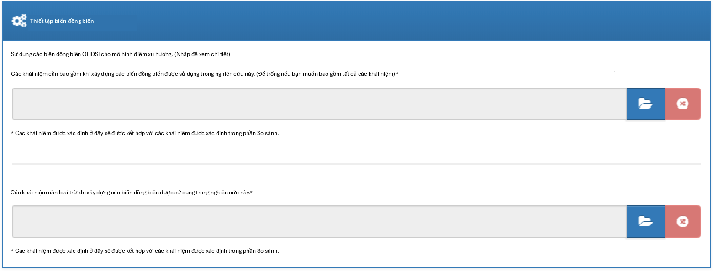
Hình 12.12: Cài đặt đồng biến.
Thời gian có nguy cơ
Thời gian có nguy cơ được định nghĩa tương đối so với ngày bắt đầu và ngày kết thúc của các nhóm thuần tập mục tiêu và so sánh của chúng tôi. Trong ví dụ của chúng tôi, chúng tôi đã đặt ngày bắt đầu nhóm thuần tập là bắt đầu khi bắt đầu điều trị và ngày kết thúc nhóm thuần tập là khi phơi nhiễm dừng lại (trong ít nhất 30 ngày). Chúng tôi đặt thời gian bắt đầu có nguy cơ là một ngày sau khi bắt đầu nhóm thuần tập, vì vậy một ngày sau khi bắt đầu điều trị. Một lý do để đặt thời gian bắt đầu có nguy cơ muộn hơn ngày bắt đầu nhóm thuần tập là vì chúng tôi có thể muốn loại trừ các biến cố kết cục xảy ra vào ngày bắt đầu điều trị nếu chúng tôi không tin rằng chúng có khả năng sinh học do thuốc gây ra.
Chúng tôi đặt thời điểm kết thúc thời gian có nguy cơ là khi kết thúc nhóm thuần tập, vì vậy khi phơi nhiễm dừng lại. Chúng tôi có thể chọn đặt ngày kết thúc muộn hơn nếu ví dụ chúng tôi tin rằng các biến cố theo sau ngay khi điều trị
kết thúc vẫn có thể được quy cho phơi nhiễm. Trong trường hợp cực đoan, chúng tôi có thể đặt thời điểm kết thúc thời gian có nguy cơ là một số ngày lớn (ví dụ: 99999) sau ngày kết thúc nhóm thuần tập, nghĩa là chúng tôi sẽ theo dõi hiệu quả các đối tượng cho đến khi kết thúc quan sát. Một thiết kế như vậy đôi khi được gọi là thiết kế theo ý định điều trị (intent-to-treat).
Một bệnh nhân có không ngày có nguy cơ không thêm thông tin gì, vì vậy số ngày có nguy cơ tối thiểu thường được đặt là một ngày. Nếu có một thời gian ủ bệnh đã biết cho tác dụng phụ, thì điều này có thể được tăng lên để có được tỷ lệ thông tin hơn. Nó cũng có thể được sử dụng để tạo ra một nhóm thuần tập tương tự hơn với nhóm thuần tập của một thử nghiệm ngẫu nhiên mà nó đang được so sánh (ví dụ: tất cả các bệnh nhân trong thử nghiệm ngẫu nhiên đã được quan sát trong ít nhất N ngày).
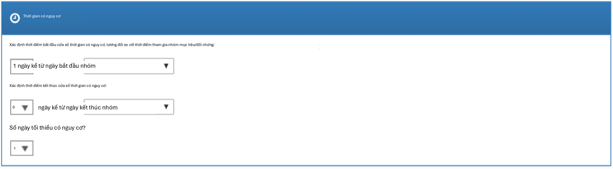
Hình 12.13: Cài đặt thời gian có nguy cơ.
Điều chỉnh điểm xu hướng
Chúng ta có thể chọn cắt tỉa quần thể nghiên cứu, loại bỏ những người có giá trị PS cực đoan. Chúng ta có thể chọn loại bỏ phần trăm cao nhất và thấp nhất, hoặc chúng ta có thể loại bỏ các đối tượng có điểm ưu tiên nằm ngoài phạm vi chúng ta chỉ định. Việc cắt tỉa các nhóm thuần tập thường không được khuyến nghị vì nó đòi hỏi phải loại bỏ các quan sát, điều này làm giảm sức mạnh thống kê. Có thể mong muốn cắt tỉa trong một số trường hợp, ví dụ khi sử dụng IPTW.
Ngoài ra, hoặc thay vì cắt tỉa, chúng ta có thể chọn phân tầng hoặc khớp trên điểm xu hướng. Khi phân tầng, chúng ta cần chỉ định số lượng tầng và liệu có chọn các tầng dựa trên mục tiêu, đối tượng so sánh hay toàn bộ quần thể nghiên cứu hay không. Khi khớp, chúng ta cần chỉ định số lượng người tối đa từ nhóm so sánh để khớp với mỗi người trong nhóm mục tiêu. Các giá trị điển hình là 1 cho khớp một-một, hoặc một số lượng lớn (ví dụ: 100) cho khớp tỷ lệ biến đổi. Chúng ta cũng cần chỉ định caliper: sự khác biệt tối đa cho phép giữa các điểm xu hướng để cho phép khớp. Caliper có thể được định nghĩa trên các thang đo caliper khác biệt:
Thang đo điểm xu hướng: chính PS
Thang đo chuẩn hóa: theo độ lệch chuẩn của các phân bố PS
Thang đo logit chuẩn hóa: theo độ lệch chuẩn của các phân bố PS sau khi biến đổi logit để làm cho PS phân bố bình thường hơn.
Trong trường hợp nghi ngờ, chúng tôi khuyên bạn nên sử dụng các giá trị mặc định, hoặc tham khảo công trình về chủ đề này của Austin (2011).
Việc khớp các mô hình điểm xu hướng quy mô lớn có thể tốn kém về mặt tính toán, vì vậy chúng ta có thể muốn giới hạn dữ liệu được sử dụng để khớp mô hình chỉ trong một mẫu dữ liệu. Theo mặc định, kích thước tối đa của nhóm thuần tập mục tiêu và so sánh được đặt là 250.000. Trong hầu hết các nghiên cứu, giới hạn này sẽ không đạt được. Cũng khó có khả năng là nhiều dữ liệu hơn sẽ dẫn đến một mô hình tốt hơn. Lưu ý rằng mặc dù một mẫu dữ liệu có thể được sử dụng để khớp mô hình, mô hình sẽ được sử dụng để tính PS cho toàn bộ quần thể.
Kiểm tra từng đồng biến về mối tương quan với việc phân bổ mục tiêu? Nếu bất kỳ đồng biến nào có mối tương quan cao bất thường (dương hoặc âm), điều này sẽ đưa ra lỗi. Điều này tránh việc tính toán kéo dài của mô hình điểm xu hướng chỉ để phát hiện sự tách biệt hoàn toàn. Việc tìm thấy mối tương quan đơn biến rất cao cho phép bạn xem xét đồng biến để xác định lý do tại sao nó có mối tương quan cao và liệu nó có nên bị loại bỏ hay không.
Sử dụng chuẩn hóa khi khớp mô hình? Quy trình chuẩn là đưa nhiều đồng biến (thường là hơn 10.000) vào mô hình điểm xu hướng. Để khớp các mô hình như vậy, cần có một số chuẩn hóa. Nếu chỉ có một vài đồng biến được chọn thủ công được đưa vào, cũng có thể khớp mô hình mà không cần chuẩn hóa.
Hình 12.14 hiển thị các lựa chọn của chúng tôi cho nghiên cứu này. Lưu ý rằng chúng tôi chọn khớp tỷ lệ biến đổi bằng cách đặt số lượng người tối đa để khớp là 100.
Cài đặt mô hình kết cục
Đầu tiên, chúng ta cần chỉ định mô hình thống kê mà chúng ta sẽ sử dụng để ước tính nguy cơ tương đối của kết cục giữa các nhóm thuần tập mục tiêu và so sánh. Chúng ta có thể chọn giữa hồi quy Cox, Poisson và logistic, như đã thảo luận ngắn gọn trong Phần 12.1. Đối với ví dụ của mình, chúng tôi chọn mô hình nguy cơ tỷ lệ Cox, xem xét thời gian đến biến cố đầu tiên với khả năng kiểm duyệt. Tiếp theo, chúng ta cần chỉ định liệu hồi quy có nên được điều kiện hóa trên các tầng hay không. Một cách để hiểu về điều kiện hóa là tưởng tượng một ước tính riêng biệt được tạo ra ở mỗi tầng, và sau đó được kết hợp trên các tầng. Đối với khớp một-một, điều này có khả năng không cần thiết và sẽ chỉ làm mất sức mạnh. Đối với phân tầng hoặc khớp tỷ lệ biến đổi, điều này là cần thiết.
Chúng ta cũng có thể chọn thêm các đồng biến vào mô hình kết cục để điều chỉnh phân tích. Điều này có thể được thực hiện bổ sung hoặc thay vì sử dụng mô hình điểm xu hướng. Tuy nhiên, trong khi thường có đủ dữ liệu để khớp mô hình điểm xu hướng, với nhiều người trong cả hai nhóm điều trị, thường có rất ít dữ liệu để khớp mô hình kết cục, với chỉ một vài người có kết cục. Do đó, chúng tôi khuyên bạn nên giữ mô hình kết cục đơn giản nhất có thể và không đưa thêm các đồng biến bổ sung.
Thay vì phân tầng hoặc khớp trên điểm xu hướng, chúng ta cũng có thể chọn sử dụng trọng số
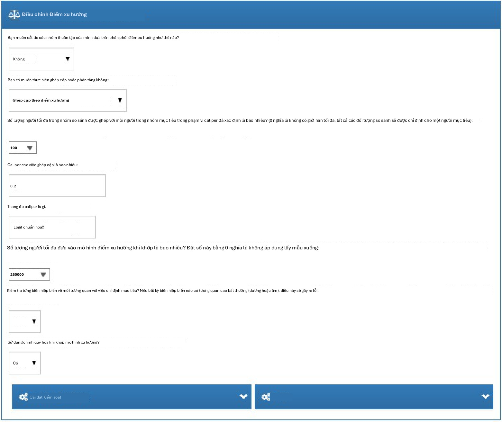
Hình 12.14: Cài đặt điều chỉnh điểm xu hướng.
xác suất phơi nhiễm nghịch đảo (IPTW).
Nếu chúng ta chọn đưa tất cả các đồng biến vào mô hình kết cục, có thể hợp lý khi sử dụng chuẩn hóa khi khớp mô hình nếu có nhiều đồng biến. Lưu ý rằng không có chuẩn hóa nào sẽ được áp dụng cho biến điều trị để cho phép ước tính không chệch.
Hình 12.15 hiển thị các lựa chọn của chúng tôi cho nghiên cứu này. Vì chúng tôi sử dụng khớp tỷ lệ biến đổi, chúng tôi phải điều kiện hóa hồi quy trên các tầng (tức là các tập hợp đã khớp).
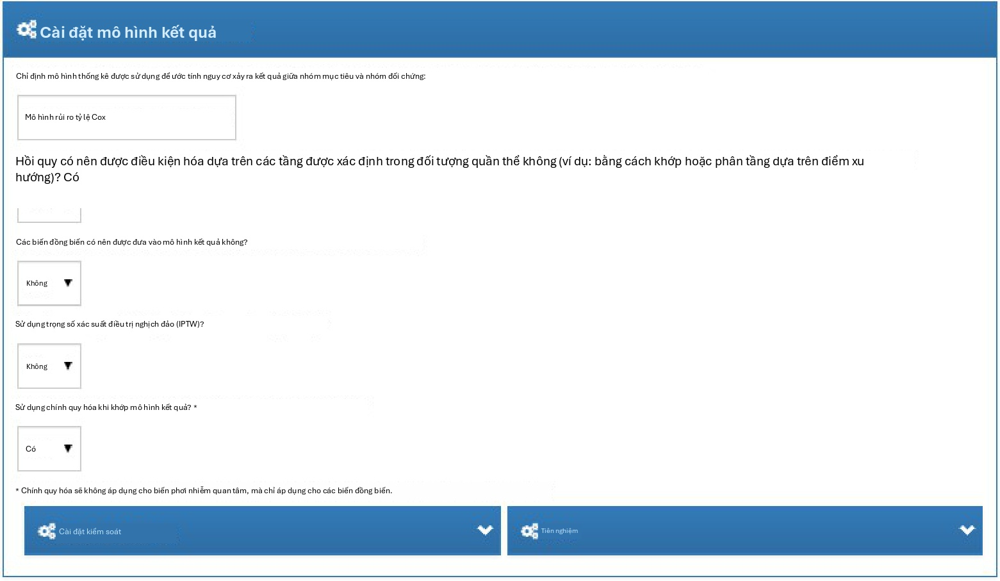
Hình 12.15: Cài đặt mô hình kết cục.
Cài đặt đánh giá
Như được mô tả trong Chương 18, các kiểm soát âm tính và dương tính nên được đưa vào nghiên cứu của chúng tôi để đánh giá các đặc điểm vận hành và thực hiện hiệu chuẩn thực nghiệm.
Định nghĩa nhóm thuần tập kết cục kiểm soát âm tính
Trong Phần 12.7.1, chúng tôi đã chọn một tập hợp khái niệm đại diện cho các kết cục kiểm soát âm tính. Tuy nhiên, chúng ta cần logic để chuyển đổi các khái niệm thành các nhóm thuần tập để sử dụng làm kết cục trong phân tích của mình. ATLAS cung cấp logic chuẩn với ba lựa chọn. Lựa chọn đầu tiên là liệu có sử dụng tất cả các lần xuất hiện hay chỉ lần xuất hiện đầu tiên của khái niệm. Lựa chọn thứ hai xác định liệu các lần xuất hiện của các khái niệm hậu duệ có nên được xem xét hay không. Ví dụ, các lần xuất hiện của hậu duệ “ingrown nail of foot” (móng chọc thịt ở chân) cũng có thể được tính là một lần xuất hiện của tổ tiên “ingrown nail” (móng chọc thịt). Lựa chọn thứ ba chỉ định những miền nào nên được xem xét khi tìm kiếm các khái niệm.
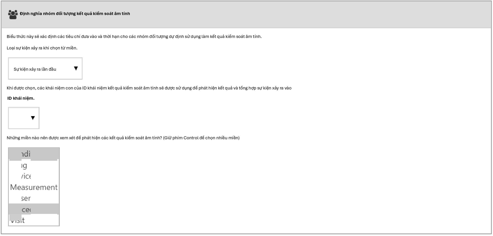
Hình 12.16: Cài đặt định nghĩa nhóm thuần tập kết cục kiểm soát âm tính.
Tổng hợp kiểm soát dương tính
Ngoài các kiểm soát âm tính, chúng ta cũng có thể đưa vào các kiểm soát dương tính, là các cặp phơi nhiễm-kết cục nơi một hiệu quả nhân quả được cho là tồn tại với kích thước hiệu quả đã biết. Vì nhiều lý do, các kiểm soát dương tính thực tế có vấn đề, vì vậy thay vào đó chúng ta dựa vào các kiểm soát dương tính tổng hợp, bắt nguồn từ các kiểm soát âm tính như được mô tả trong Chương 18. Chúng ta có thể chọn thực hiện tổng hợp kiểm soát dương tính. Nếu “yes” (có), chúng ta phải chọn loại mô hình, hiện tại là “Poisson” và “survival” (sống sót). Vì chúng tôi sử dụng mô hình sống sót (Cox) trong nghiên cứu ước tính của mình, chúng tôi nên chọn “survival”. Chúng tôi định nghĩa mô hình thời gian có nguy cơ cho tổng hợp kiểm soát dương tính giống như trong cài đặt ước tính của mình, và tương tự bắt chước các lựa chọn cho thời gian quan sát liên tục tối thiểu cần thiết trước khi phơi nhiễm, liệu chỉ nên bao gồm phơi nhiễm đầu tiên, liệu chỉ nên bao gồm kết cục đầu tiên, cũng như loại bỏ những người có kết cục trước đó. Hình 12.15 hiển thị các cài đặt cho tổng hợp kiểm soát dương tính.
Chạy gói nghiên cứu
Bây giờ chúng ta đã định nghĩa đầy đủ nghiên cứu của mình, chúng ta có thể xuất nó dưới dạng một gói R thực thi được. Gói này chứa mọi thứ cần thiết để thực hiện nghiên cứu tại một cơ sở có dữ liệu trong CDM. Điều này bao gồm các định nghĩa nhóm thuần tập có thể được sử dụng để khởi tạo các nhóm thuần tập mục tiêu, so sánh và kết cục, tập hợp khái niệm kiểm soát âm tính và logic để tạo các nhóm thuần tập kết cục kiểm soát âm tính, cũng như mã R để thực hiện phân tích. Trước khi tạo gói, hãy đảm bảo lưu nghiên cứu của bạn, sau đó nhấp vào tab Utilities (Tiện ích). Tại đây, chúng ta có thể xem lại tập hợp các phân tích sẽ được thực hiện. Như đã đề cập trước đó, mỗi kết hợp của một so sánh và một cài đặt phân tích sẽ dẫn đến một phân tích riêng biệt. Trong ví dụ của mình, chúng tôi đã chỉ định hai phân tích: ACEi so với THZ cho AMI, và ACEi so với THZ cho phù mạch, cả hai đều sử dụng khớp điểm xu hướng.
Chúng ta phải cung cấp tên cho gói của mình, sau đó chúng ta có thể nhấp vào “Download” (Tải xuống) để
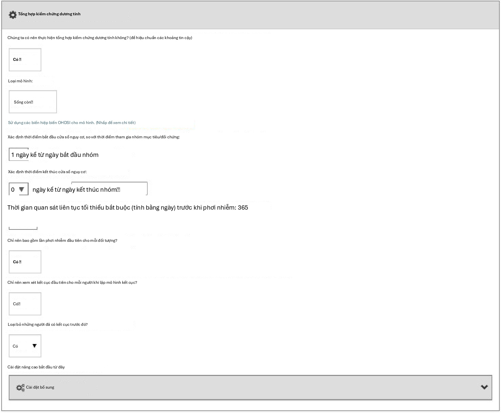
Hình 12.17: Cài đặt định nghĩa nhóm thuần tập kết cục kiểm soát âm tính.
tải xuống tệp zip. Tệp zip chứa một gói R, với cấu trúc thư mục bắt buộc thông thường cho các gói R. (Wickham, 2015) Để sử dụng gói này, chúng tôi khuyên bạn nên sử dụng R Studio. Nếu bạn đang chạy R Studio cục bộ, hãy giải nén tệp và nhấp đúp vào tệp .Rproj để mở nó trong R Studio. Nếu bạn đang chạy R Studio trên một máy chủ R studio, hãy nhấp vào để tải lên và giải nén tệp, sau đó nhấp vào tệp .Rproj để mở dự án.
Sau khi bạn đã mở dự án trong R Studio, bạn có thể mở tệp README và làm theo hướng dẫn. Hãy chắc chắn thay đổi tất cả các đường dẫn tệp thành các đường dẫn hiện có trên hệ thống của bạn.
Một thông báo lỗi phổ biến có thể xuất hiện khi chạy nghiên cứu là “High correlation between covariate(s) and treatment detected.” (Phát hiện mối tương quan cao giữa (các) đồng biến và điều trị). Điều này cho thấy rằng khi khớp mô hình điểm xu hướng, một số đồng biến được quan sát thấy có mối tương quan cao với phơi nhiễm. Vui lòng xem xét các đồng biến được đề cập trong thông báo lỗi và loại trừ chúng khỏi tập hợp các đồng biến nếu thích hợp (xem Phần 12.1.2).
Triển khai nghiên cứu bằng R
Thay vì sử dụng ATLAS để viết mã R thực thi nghiên cứu, chúng ta cũng có thể tự viết mã R. Một lý do chúng ta có thể muốn làm điều này là vì R cung cấp sự linh hoạt lớn hơn nhiều so với những gì được hiển thị trong ATLAS. Nếu chúng ta ví dụ muốn sử dụng các đồng biến tùy chỉnh, hoặc một mô hình kết cục tuyến tính, chúng ta sẽ cần viết một số mã R tùy chỉnh và kết hợp nó với chức năng được cung cấp bởi các gói R của OHDSI.
Đối với nghiên cứu ví dụ của mình, chúng tôi sẽ dựa vào gói CohortMethod để thực hiện nghiên cứu. CohortMethod trích xuất dữ liệu cần thiết từ một cơ sở dữ liệu trong CDM và có thể sử dụng một tập hợp lớn các đồng biến cho mô hình điểm xu hướng. Trong ví dụ sau, trước tiên chúng tôi chỉ xem xét phù mạch là kết cục. Trong Phần 12.8.6, sau đó chúng tôi mô tả cách điều này có thể được mở rộng để bao gồm AMI và các kết cục kiểm soát âm tính.
Khởi tạo nhóm thuần tập
Trước tiên, chúng ta cần khởi tạo các nhóm thuần tập mục tiêu và kết cục. Việc khởi tạo các nhóm thuần tập được mô tả trong Chương 10. Phụ lục cung cấp các định nghĩa đầy đủ về các nhóm thuần tập mục tiêu (Phụ lục B.2), so sánh (Phụ lục B.5) và kết cục (Phụ lục B.4). Chúng tôi sẽ giả định rằng các nhóm thuần tập ACEi, THZ và phù mạch đã được khởi tạo trong một bảng có tên scratch.my_cohorts với các ID định nghĩa nhóm thuần tập lần lượt là 1, 2 và 3.
Trích xuất dữ liệu
Trước tiên, chúng ta cần cho R biết cách kết nối với máy chủ. CohortMethod sử dụng gói DatabaseConnector, cung cấp một hàm có tên là createConnectionDetails. Gõ
?createConnectionDetails cho các cài đặt cụ thể cần thiết cho các hệ thống quản lý cơ sở dữ liệu (DBMS) khác nhau.
Ví dụ, người ta có thể kết nối với cơ sở dữ liệu PostgreSQL bằng mã này:
library(CohortMethod)
connDetails <- createConnectionDetails(dbms = "postgresql",
server = "localhost/ohdsi", user = "joe",
password = "supersecret")
cdmDbSchema <- "my_cdm_data" cohortDbSchema <- "scratch" cohortTable <- "my_cohorts" cdmVersion <- "5"
Bốn dòng cuối cùng định nghĩa các biến cdmDbSchema, cohortDbSchema và cohortTable, cũng như phiên bản CDM. Chúng tôi sẽ sử dụng những biến này sau để cho R biết dữ liệu ở định dạng CDM nằm ở đâu, nơi các nhóm thuần tập quan tâm đã được tạo và phiên bản CDM nào được sử dụng. Lưu ý rằng đối với Microsoft SQL Server, các lược đồ cơ sở dữ liệu cần chỉ định cả cơ sở dữ liệu và lược đồ, vì vậy ví dụ cdmDbSchema <- "my_cdm_data.dbo".
Bây giờ chúng ta có thể yêu cầu CohortMethod trích xuất các nhóm thuần tập, xây dựng các đồng biến và trích xuất tất cả dữ liệu cần thiết cho phân tích của mình:
# các khái niệm hoạt chất mục tiêu và so sánh:
aceI <- c(1335471,1340128,1341927,1363749,1308216,1310756,1373225, 1331235,1334456,1342439)
thz <- c(1395058,974166,978555,907013)
# Xác định loại đồng biến nào phải được xây dựng:
cs <- createDefaultCovariateSettings(excludedCovariateConceptIds = c(aceI,
thz),
addDescendantsToExclude = TRUE)
#Tải dữ liệu:
cmData <- getDbCohortMethodData(connectionDetails = connectionDetails,
cdmDatabaseSchema = cdmDatabaseSchema, oracleTempSchema = NULL,
targetId = 1,
comparatorId = 2,
resultIds = 3, StudyStartDate = "", StudyEndDate = "",
phơi sángDatabaseSchema = đoàn hệDbSchema, bảng hiển thị = đoàn hệBảng, kết quảDatabaseSchema = đoàn hệDbSchema, resultTable = đoàn hệBảng,
cdmVersion = cdmVersion, firstExposureOnly = FALSE, RemoveDuplicateSubjects = FALSE, limitToCommonPeriod = FALSE, washoutPeriod = 0,
covariateSettings = cs)
cmData
## Đối tượng CohortMethodData ##
## ID khái niệm điều trị: 1 ## ID khái niệm so sánh: 2 ## ID khái niệm kết cục: 3
Có rất nhiều tham số, nhưng tất cả chúng đều được ghi lại trong hướng dẫn sử dụng CohortMethod. Hàm createDefaultCovariateSettings được mô tả trong gói FeatureExtraction. Tóm lại, chúng ta đang trỏ hàm đến bảng chứa các nhóm thuần tập của mình và chỉ định ID định nghĩa nhóm thuần tập nào trong bảng đó xác định mục tiêu, đối tượng so sánh và kết cục. Chúng tôi hướng dẫn rằng tập hợp các đồng biến mặc định nên được xây dựng, bao gồm các đồng biến cho tất cả các tình trạng bệnh, phơi nhiễm thuốc và thủ thuật được tìm thấy vào hoặc trước ngày chỉ mục. Như đã đề cập trong Phần 12.1, chúng ta phải loại trừ các phương pháp điều trị mục tiêu và so sánh khỏi tập hợp các đồng biến, và ở đây chúng ta đạt được điều này bằng cách liệt kê tất cả các hoạt chất trong hai nhóm, và yêu cầu FeatureExtraction cũng loại trừ tất cả các hậu duệ, do đó loại trừ tất cả các loại thuốc chứa các hoạt chất này.
Tất cả dữ liệu về các nhóm thuần tập, kết cục và đồng biến được trích xuất từ máy chủ và lưu trữ trong đối tượng cohortMethodData. Đối tượng này sử dụng gói ff để lưu trữ thông tin theo cách đảm bảo R không bị hết bộ nhớ, ngay cả khi dữ liệu lớn, như đã đề cập trong Phần 8.4.2.
Chúng ta có thể sử dụng hàm generic summary() để xem thêm thông tin về dữ liệu chúng ta đã trích xuất:
summary(cmData)
## Tóm tắt đối tượng CohortMethodData ##
## ID khái niệm điều trị: 1 ## ID khái niệm so sánh: 2 ## ID khái niệm kết cục: 3 ##
## Số người được điều trị: 67166
## Số người so sánh: 35333 ##
## Số lượng kết cục:
## Số lượng biến cố Số lượng người ## 3 980 891
##
## Các biến hiệp biến:
## Số lượng biến hiệp biến: 58349
## Số lượng giá trị biến hiệp biến khác không: 24484665
Việc tạo tệp cohortMethodData có thể tốn khá nhiều thời gian tính toán, và có lẽ bạn nên lưu lại tệp này cho các phiên làm việc trong tương lai. Vì cohortMethodData sử dụng ff, chúng ta không thể sử dụng hàm lưu (save) thông thường của R. Thay vào đó, chúng ta sẽ phải sử dụng hàm saveCohortMethodData():
saveCohortMethodData(cmData, "AceiVsThzForAngioedema")
Chúng ta có thể sử dụng hàm loadCohortMethodData() để tải dữ liệu trong một phiên làm việc tương lai.
Định nghĩa người dùng mới
Thông thường, một người dùng mới được định nghĩa là người sử dụng thuốc lần đầu (thuốc mục tiêu hoặc thuốc so sánh), và thường sử dụng một khoảng thời gian rửa trôi (washout period) (một số ngày tối thiểu trước khi sử dụng lần đầu) để tăng xác suất đó thực sự là lần sử dụng đầu tiên. Khi sử dụng gói CohortMethod, bạn có thể thực thi các yêu cầu cần thiết cho việc sử dụng mới theo ba cách:
Khi định nghĩa các nhóm thuần tập.
Khi tải các nhóm thuần tập sử dụng hàm getDbCohortMethodData, bạn có thể
sử dụng các đối số firstExposureOnly, removeDuplicateSubjects, restrictToCommonPeriod và washoutPeriod.
- Khi định nghĩa quần thể nghiên cứu sử dụng hàm createStudyPopulation (xem bên dưới).
Ưu điểm của tùy chọn 1 là các nhóm thuần tập đầu vào đã được định nghĩa đầy đủ bên ngoài gói CohortMethod, và các công cụ đặc điểm hóa nhóm thuần tập bên ngoài có thể được sử dụng trên cùng các nhóm thuần tập được dùng trong phân tích này. Ưu điểm của tùy chọn 2 và 3 là giúp bạn tiết kiệm công sức tự giới hạn việc sử dụng lần đầu, ví dụ như cho phép bạn sử dụng trực tiếp bảng DRUG_ERA trong CDM. Tùy chọn 2 hiệu quả hơn tùy chọn 3, vì chỉ dữ liệu cho lần sử dụng đầu tiên mới được tìm nạp, trong khi tùy chọn 3 kém hiệu quả hơn nhưng cho phép bạn so sánh các nhóm thuần tập gốc với quần thể nghiên cứu.
Định nghĩa quần thể nghiên cứu
Thông thường, các nhóm thuần tập phơi nhiễm và nhóm thuần tập kết cục sẽ được định nghĩa độc lập với nhau. Khi chúng ta muốn tạo ra một ước tính quy mô hiệu quả, chúng ta cần hạn chế thêm các nhóm thuần tập này và kết hợp chúng lại với nhau, ví dụ như bằng cách loại bỏ các đối tượng đã phơi nhiễm có kết cục trước khi phơi nhiễm, và chỉ giữ lại các kết cục nằm trong một khoảng thời gian nguy cơ xác định. Đối với việc này, chúng ta có thể sử dụng hàm createStudyPopulation:
studyPop <- createStudyPopulation(cohortMethodData = cmData,
outcomeId = 3, firstExposureOnly = FALSE, restrictToCommonPeriod = FALSE, washoutPeriod = 0,
removeDuplicateSubjects = "remove all", removeSubjectsWithPriorOutcome = TRUE, minDaysAtRisk = 1,
riskWindowStart = 1, startAnchor = "cohort start", riskWindowEnd = 0,
endAnchor = "cohort end")
Lưu ý rằng chúng ta đã đặt firstExposureOnly và removeDuplicateSubjects thành FALSE, và washoutPeriod thành 0 vì chúng ta đã áp dụng các tiêu chí đó trong định nghĩa nhóm thuần tập. Chúng ta chỉ định ID kết cục sẽ sử dụng, và những người có kết cục trước ngày bắt đầu khoảng thời gian nguy cơ sẽ bị loại bỏ. Khoảng thời gian nguy cơ được định nghĩa là bắt đầu vào ngày sau ngày bắt đầu nhóm thuần tập (riskWindowStart = 1 và startAnchor = "cohort start"), và khoảng thời gian nguy cơ kết thúc khi phơi nhiễm nhóm thuần tập kết thúc (riskWindowEnd
= 0 và endAnchor = "cohort end"), điều này đã được định nghĩa là kết thúc phơi nhiễm trong định nghĩa nhóm thuần tập. Lưu ý rằng các khoảng thời gian nguy cơ được tự động cắt ngắn tại thời điểm kết thúc quan sát hoặc ngày kết thúc nghiên cứu. Chúng ta cũng loại bỏ các đối tượng không có thời gian nguy cơ. Để xem còn bao nhiêu người trong quần thể nghiên cứu, chúng ta luôn có thể sử dụng hàm getAttritionTable:
getAttritionTable(studyPop)
## mô tả Đối tượng Đối tượng so ... mục tiêu sánh —– ————————- ———— ————— —— ## 1 Các nhóm thuần tập gốc 67212 35379 ...
## 2 Đã loại bỏ các đối tượng 67166 35333 ... trong cả hai nhóm thuần tập
## 3 Không có biến cố trước đó 67061 35238 ...
## 4 Có ít nhất 1 ngày nguy cơ 66780 35086 ... ***
Điểm xu hướng
Chúng ta có thể khớp một mô hình điểm xu hướng sử dụng các biến hiệp biến được xây dựng bởi getDbcohortMethodData(), và tính toán PS cho mỗi người:
ps <- createPs(cohortMethodData = cmData, population = studyPop)
Hàm createPs sử dụng gói Cyclops để khớp một hồi quy logistic có điều chỉnh quy mô lớn. Để khớp mô hình điểm xu hướng, Cyclops cần biết giá trị siêu tham số chỉ định phương sai của phân phối tiên nghiệm (prior). Theo mặc định, Cyclops sẽ sử dụng kiểm chứng chéo để ước tính siêu tham số tối ưu. Tuy nhiên, hãy lưu ý rằng việc này có thể mất rất nhiều thời gian. Bạn có thể sử dụng các tham số prior và control của hàm createPs để chỉ định hành vi của Cyclops, bao gồm việc sử dụng nhiều CPU để tăng tốc quá trình kiểm chứng chéo.
Ở đây chúng ta sử dụng PS để thực hiện ghép cặp theo tỷ lệ biến đổi:
Ngoài ra, chúng ta có thể sử dụng PS trong các hàm trimByPs, trimByPsToEquipoise, hoặc
stratifyByPs.
Các mô hình kết cục
Mô hình kết cục là một mô hình mô tả các biến nào liên quan đến kết cục. Dưới các giả định nghiêm ngặt, hệ số cho biến điều trị có thể được giải thích là hiệu quả nhân quả. Trong trường hợp này, chúng ta khớp một mô hình rủi ro tỷ lệ Cox, được điều kiện hóa (phân tầng) trên các tập hợp đã ghép cặp:
outcomeModel <- fitOutcomeModel(population = matchedPop,
modelType = "cox", stratified = TRUE)
outcomeModel
## Loại mô hình: cox ## Đã phân tầng: TRUE
## Sử dụng biến hiệp biến: FALSE
## Sử dụng trọng số xác suất nghịch đảo của điều trị: FALSE ## Trạng thái: OK
##
## Ước tính thấp hơn .95 cao hơn .95 logRr seLogRr ## điều trị 4.3203 2.4531 8.0771 1.4633 0.304
Chạy nhiều phân tích
Thông thường, chúng ta muốn thực hiện nhiều hơn một phân tích, ví dụ như cho nhiều kết cục bao gồm các đối chứng âm tính. CohortMethod cung cấp các hàm để thực hiện các nghiên cứu như vậy một cách hiệu quả. Điều này được mô tả chi tiết trong tài liệu tóm tắt của gói về việc chạy nhiều phân tích. Tóm lại, giả sử kết cục quan tâm và các nhóm thuần tập đối chứng âm tính đã được tạo, chúng ta có thể chỉ định tất cả các kết hợp mục tiêu-đối chứng-kết cục mà chúng ta muốn phân tích:
# Outcomes of interest:
ois <- c(3, 4) # Angioedema, AMI
# Negative controls:
ncs <- c(434165,436409,199192,4088290,4092879,44783954,75911,137951,77965, 376707,4103640,73241,133655,73560,434327,4213540,140842,81378,
432303,4201390,46269889,134438,78619,201606,76786,4115402,
45757370,433111,433527,4170770,4092896,259995,40481632,4166231,
433577,4231770,440329,4012570,4012934,441788,4201717,374375,
4344500,139099,444132,196168,432593,434203,438329,195873,4083487,
4103703,4209423,377572,40480893,136368,140648,438130,4091513,
4202045,373478,46286594,439790,81634,380706,141932,36713918,
443172,81151,72748,378427,437264,194083,140641,440193,4115367)
tcos <- createTargetComparatorOutcomes(targetId = 1,
comparatorId = 2, outcomeIds = c(ois, ncs))
tcosList <- list(tcos)
Tiếp theo, chúng ta chỉ định các tham số nào nên được sử dụng khi gọi các hàm khác nhau đã được mô tả trước đó trong ví dụ của chúng ta với một kết cục:
aceI <- c(1335471,1340128,1341927,1363749,1308216,1310756,1373225, 1331235,1334456,1342439)
thz <- c(1395058,974166,978555,907013)
cs <- createDefaultCovariateSettings(excludedCovariateConceptIds = c(aceI,
thz),
addDescendantsToExclude = TRUE)
cmdArgs <- createGetDbCohortMethodDataArgs( studyStartDate = "",
StudyEndDate = "", firstExposureOnly = FALSE, RemoveDuplicateSubjects = FALSE, limitToCommonPeriod = FALSE, washoutPeriod = 0, covariateSettings = cs)
spArgs <- createCreateStudyPopulationArgs( firstExposureOnly = FALSE, limitToCommonPeriod = FALSE, washoutPeriod = 0, RemoveDuplicateSubjects = "xóa tất cả", RemoveSubjectsWithPriorOutcome = TRUE, minDaysAtRisk = 1,
startAnchor = "bắt đầu nhóm", addExposureDaysToStart = FALSE, endAnchor = "kết thúc nhóm", addExposureDaysToEnd = TRUE)
psArgs <- createCreatePsArgs()
matchArgs <- createMatchOnPsArgs( caliper = 0.2,
caliperScale = "standardized logit", maxRatio = 100)
fomArgs <- createFitOutcomeModelArgs( modelType = "cox",
stratified = TRUE)
Sau đó, chúng ta kết hợp các tham số này thành một đối tượng cài đặt phân tích duy nhất, mà chúng ta cung cấp một ID phân tích duy nhất và một số mô tả. Chúng ta có thể kết hợp một hoặc nhiều đối tượng cài đặt phân tích thành một danh sách:
cmAnalysis <- createCmAnalysis( analysisId = 1,
description = "Propensity score matching", getDbCohortMethodDataArgs = cmdArgs, createStudyPopArgs = spArgs,
createPs = TRUE, createPsArgs = psArgs, matchOnPs = TRUE, matchOnPsArgs = matchArgs fitOutcomeModel = TRUE,
fitOutcomeModelArgs = fomArgs)
cmAnalysisList <- list(cmAnalysis)
Bây giờ chúng ta có thể chạy nghiên cứu bao gồm tất cả các so sánh và cài đặt phân tích:
result <- runCmAnalyses(connectionDetails = connectionDetails,
cdmDatabaseSchema = cdmDatabaseSchema, exposureDatabaseSchema = cohortDbSchema, exposureTable = cohortTable, outcomeDatabaseSchema = cohortDbSchema, outcomeTable = cohortTable,
cdmVersion = cdmVersion, outputFolder = outputFolder, cmAnalysisList = cmAnalysisList,
targetComparatorOutcomesList = tcosList)
Đối tượng kết quả chứa các tham chiếu đến tất cả các tạo tác đã được tạo. Ví dụ, chúng ta có thể truy xuất mô hình kết cục cho AMI:
omFile <- result$outcomeModelFile[result$targetId == 1 &
result$comparatorId == 2 & result$outcomeId == 4 & result$analysisId == 1]
outcomeModel <- readRDS(file.path(outputFolder, omFile)) outcomeModel
## Loại mô hình: cox ## Đã phân tầng: TRUE
## Sử dụng biến hiệp biến: FALSE
## Sử dụng trọng số xác suất nghịch đảo của điều trị: FALSE ## Trạng thái: OK
##
## Ước tính thấp hơn .95 cao hơn .95 logRr seLogRr ## điều trị 1.1338 0.5921 2.1765 0.1256 0.332
Chúng ta cũng có thể truy xuất các ước tính quy mô hiệu quả cho tất cả các kết cục bằng một lệnh:
summ <- summarizeAnalyses(result, outputFolder = outputFolder) head(summ)
## phân tíchId targetId so sánhId kết quảId rr ...
| ## 1 | 1 | 1 | 2 | 72748 0.9734698 ... |
|---|---|---|---|---|
| ## 2 | 1 | 1 | 2 | 73241 0.7067981 ... |
| ## 3 | 1 | 1 | 2 | 73560 1.0623951 ... |
| ## 4 | 1 | 1 | 2 | 75911 0.9952184 ... |
| ## 5 | 1 | 1 | 2 | 76786 1.0861746 ... |
## 6 12.9 |
|
1 | 2 | 77965 1.1439772 ... |
Các ước tính của chúng ta chỉ hợp lệ nếu đáp ứng được một số giả định. Chúng ta sử dụng một bộ chẩn đoán rộng để đánh giá xem điều này có đúng không. Các chẩn đoán này có sẵn trong các kết quả được tạo ra bởi gói R do ATLAS tạo, hoặc có thể được tạo nhanh chóng bằng các hàm R cụ thể.
.1 Điểm xu hướng và mô hình
Trước tiên, chúng ta cần đánh giá xem nhóm thuần tập mục tiêu và đối chứng có thể so sánh được ở mức độ nào hay không. Đối với điều này, chúng ta có thể tính toán thống kê Diện tích dưới đường cong ROC (AUC) cho mô hình điểm xu hướng. AUC bằng 1 cho thấy việc chỉ định điều trị hoàn toàn có thể dự đoán được dựa trên các biến hiệp biến cơ bản, và do đó hai nhóm không thể so sánh được. Chúng ta có thể sử dụng hàm computePsAuc để tính toán AUC, trong ví dụ của chúng ta là 0.79. Sử dụng hàm plotPs, chúng ta cũng có thể tạo phân phối điểm ưu tiên như trong Hình 12.18. Ở đây chúng ta thấy rằng đối với nhiều người, việc điều trị họ nhận được là có thể dự đoán được, nhưng cũng có một lượng lớn sự chồng lấp, cho thấy rằng việc điều chỉnh có thể được sử dụng để chọn các nhóm có thể so sánh.

Hình 12.18: Phân phối điểm ưu tiên.
Nhìn chung, việc kiểm tra chính mô hình điểm xu hướng cũng là một ý tưởng hay, đặc biệt là nếu mô hình có khả năng dự đoán rất cao. Bằng cách đó, chúng ta có thể khám phá các biến nào có khả năng dự đoán cao nhất. Bảng 12.7 hiển thị các biến dự báo hàng đầu trong mô hình điểm xu hướng của chúng ta. Lưu ý rằng nếu một biến có khả năng dự đoán quá cao, gói CohortMethod sẽ đưa ra một lỗi thông báo thay vì cố gắng khớp một mô hình đã được biết là có khả năng dự đoán hoàn hảo.
Bảng 12.7: 10 biến dự báo hàng đầu trong mô hình điểm xu hướng cho ACEi và THZ. Các giá trị dương có nghĩa là các đối tượng có biến hiệp biến đó có nhiều khả năng nhận được điều trị mục tiêu hơn. “(Intercept)” chỉ ra hệ số chặn của mô hình hồi quy logistic này.
Hệ số Beta Biến hiệp biến
-1.42 nhóm condition_era trong ngày -30 đến 0 ngày so với chỉ số: Phù (Edema)
-1.11 nhóm drug_era trong ngày 0 đến 0 ngày so với chỉ số: Kali Clorua
0.68 nhóm tuổi: 05-09
0.64 đo lường trong ngày -365 đến 0 ngày so với chỉ số: Renin
0.63 nhóm condition_era trong ngày -30 đến 0 ngày so với chỉ số: Mày đay (Urticaria)
0.57 nhóm condition_era trong ngày -30 đến 0 ngày so với chỉ số: Protein niệu (Proteinuria)
0.55 nhóm drug_era trong ngày -365 đến 0 ngày so với chỉ số: INSULINS VÀ CÁC CHẤT TƯƠNG TỰ
-0.54 chủng tộc = Da đen hoặc Người Mỹ gốc Phi
0.52 (Hệ số chặn)
Hệ số Beta Biến hiệp biến
0.50 giới tính = NAM
Cân bằng biến hiệp biến
Mục tiêu của việc sử dụng PS là làm cho hai nhóm có thể so sánh được (hoặc ít nhất là chọn các nhóm có thể so sánh). Chúng ta phải xác minh xem điều này có đạt được hay không, ví dụ bằng cách kiểm tra xem các biến hiệp biến cơ bản có thực sự cân bằng sau khi điều chỉnh hay không. Chúng ta có thể sử dụng các hàm computeCovariateBalance và plotCovariateBalanceScatterPlot để tạo Hình 12.19. Một quy tắc ngón tay cái cần sử dụng là không biến hiệp biến nào được có sự khác biệt chuẩn hóa tuyệt đối về giá trị trung bình lớn hơn 0.1 sau khi điều chỉnh điểm xu hướng. Ở đây chúng ta thấy rằng mặc dù có sự mất cân bằng đáng kể trước khi ghép cặp, sau khi ghép cặp, chúng ta đáp ứng tiêu chí này.

Hình 12.19: Cân bằng biến hiệp biến, hiển thị sự khác biệt chuẩn hóa tuyệt đối về giá trị trung bình trước và sau khi ghép cặp điểm xu hướng. Mỗi dấu chấm đại diện cho một biến hiệp biến.
Theo dõi và Sức mạnh thống kê
Trước khi khớp một mô hình kết cục, chúng ta có thể quan tâm đến việc biết liệu chúng ta có đủ sức mạnh thống kê để phát hiện một quy mô hiệu quả cụ thể hay không. Việc thực hiện các tính toán sức mạnh thống kê này một khi quần thể nghiên cứu đã được định nghĩa đầy đủ là hợp lý, vì vậy cần tính đến việc mất mát đối tượng do các tiêu chí bao gồm và loại trừ khác nhau (chẳng hạn như không có kết cục trước đó), và mất mát do ghép cặp và/hoặc cắt tỉa. Chúng ta có thể xem sự tiêu hao của các đối tượng trong nghiên cứu của mình bằng cách sử dụng hàm drawAttritionDiagram như hiển thị trong Hình 12.20.
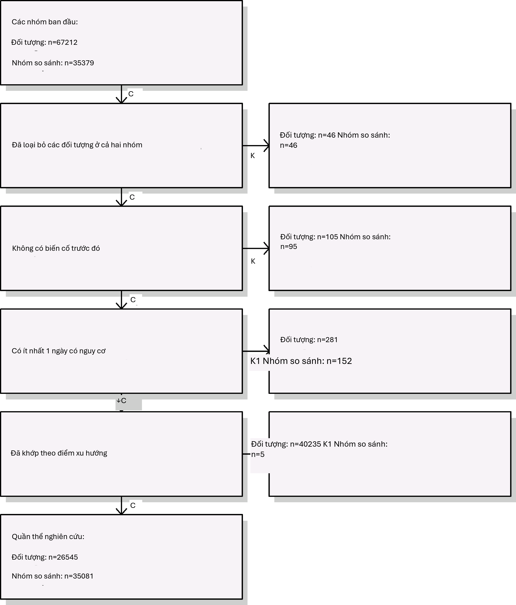
Hình 12.20: Biểu đồ tiêu hao. Các số lượng hiển thị ở trên cùng là những người đáp ứng định nghĩa nhóm thuần tập mục tiêu và đối chứng của chúng ta. Các số lượng ở dưới cùng là những người tham gia vào mô hình kết cục của chúng ta, trong trường hợp này là hồi quy Cox.
Vì kích thước mẫu là cố định trong các nghiên cứu hồi cứu (dữ liệu đã được thu thập), và quy mô hiệu quả thực sự là chưa biết, do đó việc tính toán sức mạnh thống kê dựa trên một quy mô hiệu quả kỳ vọng là ít có ý nghĩa hơn. Thay vào đó, gói CohortMethod cung cấp hàm computeMdrr để tính toán rủi ro tương đối tối thiểu có thể phát hiện (MDRR). Trong nghiên cứu ví dụ của chúng ta, MDRR là 1.69.
Để hiểu rõ hơn về lượng thời gian theo dõi có sẵn, chúng ta cũng có thể kiểm tra phân phối của thời gian theo dõi. Chúng ta định nghĩa thời gian theo dõi là thời gian nguy cơ, vì vậy không bị kiểm duyệt bởi sự xuất hiện của kết cục. Hàm getFollowUpDistribution có thể cung cấp
một cái nhìn tổng quan đơn giản như hiển thị trong Hình 12.21, cho thấy thời gian theo dõi cho cả hai nhóm thuần tập là có thể so sánh được.
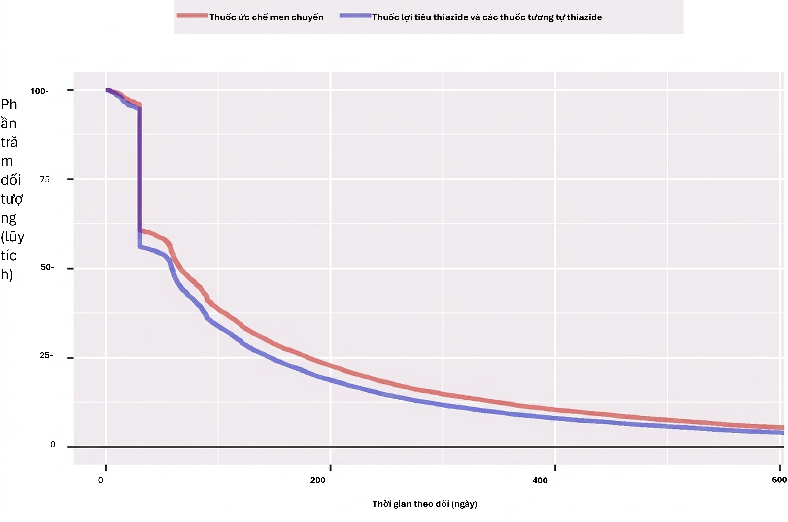
Hình 12.21: Phân phối thời gian theo dõi cho các nhóm thuần tập mục tiêu và đối chứng.
Kaplan-Meier
Một kiểm tra cuối cùng là xem xét biểu đồ Kaplan-Meier, hiển thị sự sống sót theo thời gian ở cả hai nhóm thuần tập. Sử dụng hàm plotKaplanMeier, chúng ta có thể tạo Hình 12.22, mà chúng ta có thể kiểm tra, ví dụ, liệu giả định về tỷ lệ rủi ro tỷ lệ của chúng ta có giữ nguyên hay không. Biểu đồ Kaplan-Meier tự động điều chỉnh cho sự phân tầng hoặc trọng số theo PS. Trong trường hợp này, vì ghép cặp theo tỷ lệ biến đổi được sử dụng, đường cong sống sót cho các nhóm đối chứng được điều chỉnh để bắt chước đường cong trông như thế nào đối với nhóm mục tiêu nếu họ được phơi nhiễm với đối chứng thay thế.
Ước tính quy mô hiệu quả
Chúng ta quan sát thấy tỷ lệ rủi ro là 4.32 (khoảng tin cậy 95%: 2.45 - 8.08) đối với phù mạch, cho chúng ta biết rằng ACEi dường như làm tăng nguy cơ phù mạch so với THZ. Tương tự, chúng ta quan sát thấy tỷ lệ rủi ro là 1.13 (khoảng tin cậy 95%: 0.59 - 2.18) đối với AMI, cho thấy ít hoặc không có ảnh hưởng đối với AMI. Các chẩn đoán của chúng ta, như đã xem xét trước đó, không đưa ra lý do để nghi ngờ. Tuy nhiên, cuối cùng thì chất lượng của bằng chứng này, và liệu chúng ta có chọn tin tưởng nó hay không, phụ thuộc vào nhiều yếu tố không được đề cập bởi các chẩn đoán nghiên cứu như được mô tả trong Chương 14.
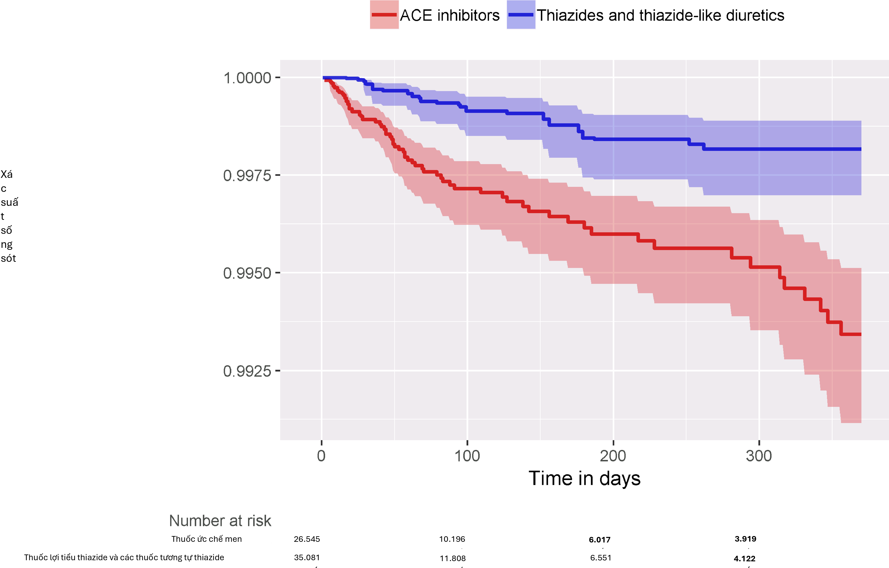
12.10. Tóm tắt 237Tóm tắt
Hình 12.22: Biểu đồ Kaplan-Meier.

Population-level estimation aims to infer causal effects from observational data.
The counterfactual, what would have happened if the subject had received an alternative exposure or no exposure, cannot be observed.
Different designs aim to construct the counterfactual in different ways.
The various designs as implemented in the OHDSI Methods Library provide diagnostics to evaluate whether the assumptions for creating an appropriate counterfactual have been met.
Bài tập
Điều kiện tiên quyết
Đối với các bài tập này, chúng tôi giả định rằng R, R-Studio và Java đã được cài đặt như mô tả trong Mục 8.4.5. Ngoài ra, các gói SqlRender, DatabaseConnector, Eunomia và CohortMethod cũng được yêu cầu, có thể được cài đặt bằng cách sử dụng:
install.packages(c("SqlRender", "DatabaseConnector", "remotes")) remotes::install_github("ohdsi/Eunomia", ref = "v1.0.0") remotes::install_github("ohdsi/CohortMethod")
Gói Eunomia cung cấp một tập dữ liệu mô phỏng trong CDM sẽ chạy bên trong phiên R cục bộ của bạn. Chi tiết kết nối có thể được lấy bằng cách sử dụng:
connectionDetails <- Eunomia::getEunomiaConnectionDetails()
Lược đồ cơ sở dữ liệu CDM là “main”. Các bài tập này cũng sử dụng một vài nhóm thuần tập. Hàm createCohorts trong gói Eunomia sẽ tạo các nhóm này trong bảng COHORT:
Eunomia::createCohorts(connectionDetails)
Định nghĩa bài toán
Nguy cơ xuất huyết tiêu hóa (GI) ở những người dùng mới sử dụng celecoxib so với những người dùng mới sử dụng diclofenac là bao nhiêu?
Nhóm thuần tập người dùng mới sử dụng celecoxib có COHORT_DEFINITION_ID = 1. Nhóm thuần tập người dùng mới sử dụng diclofenac có COHORT_DEFINITION_ID = 2. Nhóm thuần tập xuất huyết tiêu hóa có COHORT_DEFINITION_ID = 3. Các ID khái niệm thành phần cho celecoxib và diclofenac lần lượt là 1118084 và 1124300. Thời gian nguy cơ bắt đầu vào ngày bắt đầu điều trị, và dừng lại ở cuối quá trình quan sát (một phân tích gọi là intent-to-treat).
Bài tập 12.1. Sử dụng gói CohortMethod R, sử dụng tập hợp các biến hiệp biến mặc định và trích xuất CohortMethodData từ CDM. Tạo tóm tắt của CohortMethodData.
Bài tập 12.2. Tạo một quần thể nghiên cứu bằng hàm createStudyPopulation, yêu cầu thời gian rửa trôi 180 ngày, loại trừ những người đã có kết cục trước đó, và loại bỏ những người xuất hiện trong cả hai nhóm thuần tập. Chúng ta có mất người không?
Bài tập 12.3. Khớp một mô hình rủi ro tỷ lệ Cox mà không sử dụng bất kỳ sự điều chỉnh nào. Điều gì có thể xảy ra nếu bạn làm điều này?
Bài tập 12.4. Khớp một mô hình điểm xu hướng. Hai nhóm có thể so sánh được không?
Bài tập 12.5. Thực hiện phân tầng PS sử dụng 5 tầng. Sự cân bằng biến hiệp biến có đạt được không?
Bài tập 12.6. Khớp một mô hình rủi ro tỷ lệ Cox sử dụng các tầng PS. Tại sao kết quả lại khác với mô hình chưa điều chỉnh?
Các câu trả lời gợi ý có thể được tìm thấy trong Phụ lục E.8.